The LiveCode Data Grid enables you to integrate powerful tables and forms into your projects. Data grids combine LiveCode groups and behaviors to provide you with a simple, yet flexible means of displaying your data in just about any way you want.
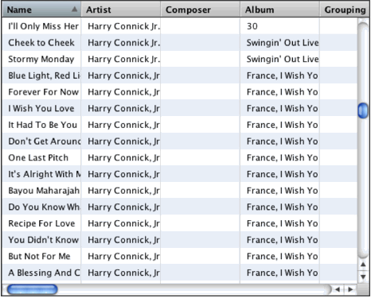
The table style of a data grid allows you to display your data in a modern looking table complete with headers, sorting, column alignment and more. By default a data grid table will use a LiveCode field to each column of each row. If you need to customize a column with graphics you can define your own templates for each column. A custom template can be any LiveCode control such as a graphic or group.
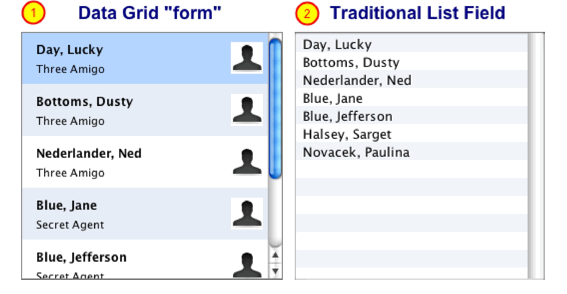
The form style of a data grid (1) is similar to a list field (2) in LiveCode in that it allows you to display records from a data source (text file, database, XML, etc.) that the user can select.
The difference is that the data grid uses a group as a template for each record. This means that for each record you display you can create rich user interfaces using menus, images, etc.
The data grid form is also very fast as it only draws the records that are currently visible on the screen. This means you can display large records sets without slow performance.
Because the data grid form is so easy to use it is not only limited to displaying lots of records. Any list where you want a rich UI and complete control over layout and processing of engine events can benefit from being displayed using a data grid form.
Of course we can! The areas of the screenshots highlighted in blue are instances of the data grid control.
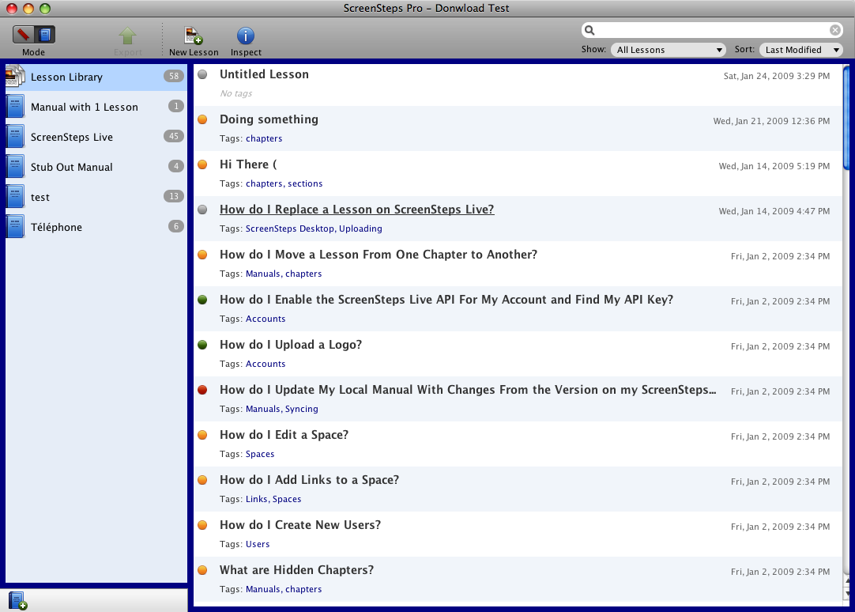


This lesson will show you how to create a bare bones data grid table. Data grid tables are useful when you need to display rows of data in structured columns.
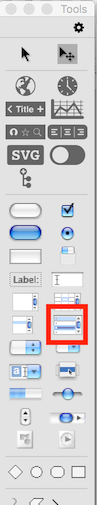
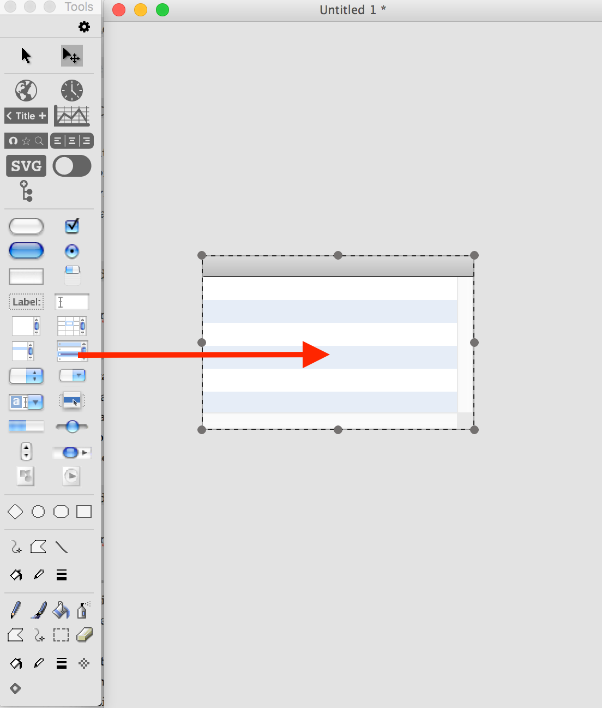
Data Grid tables display data in columns that you can customize the look of. You don't have to worry about customization right now though because a Data Grid table can display plain text just fine. Let's test it out.
As with all controls in LiveCode you can open the Data Grid's Property Inspector three ways.
Select the data grid in question and then:
So, open the Property Inspector for the data grid you have just dragged onto the card.
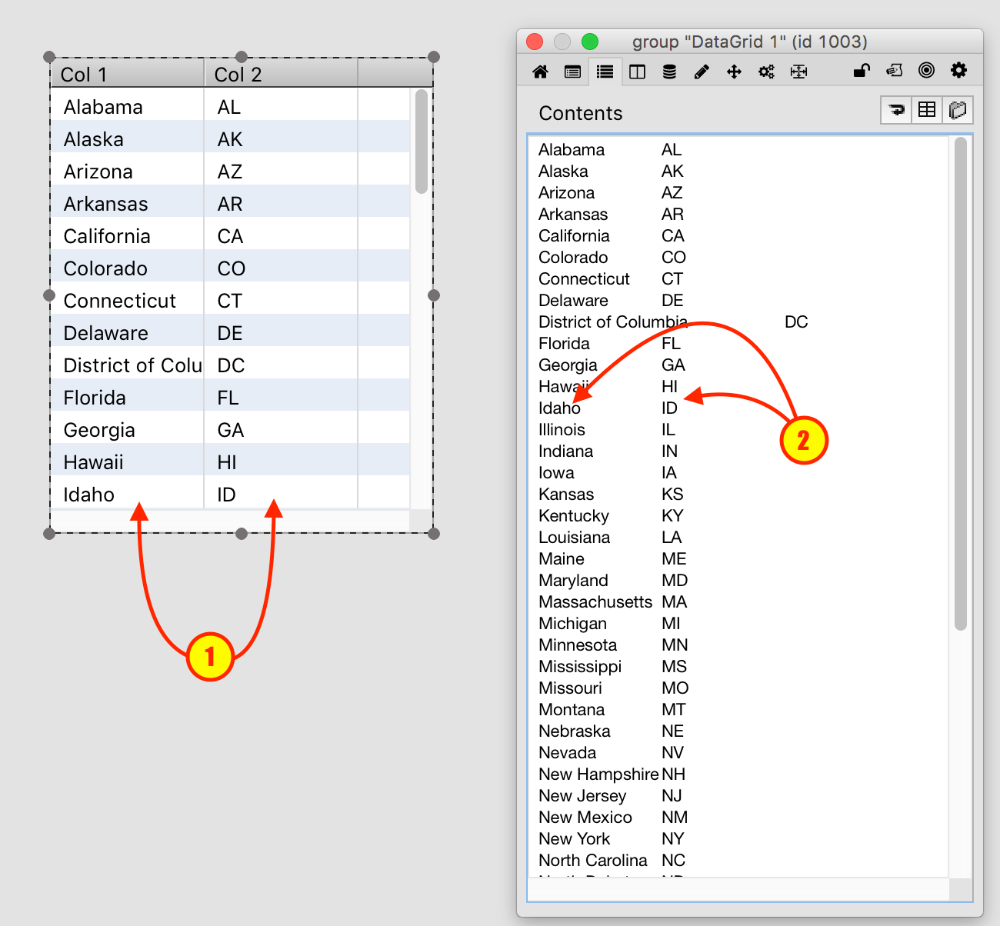
The tab delimited text you entered in the field will appear as columns in the data grid (1). The Property Inspector automatically creates a column in the Data Grid for each column in the text you provide (2).
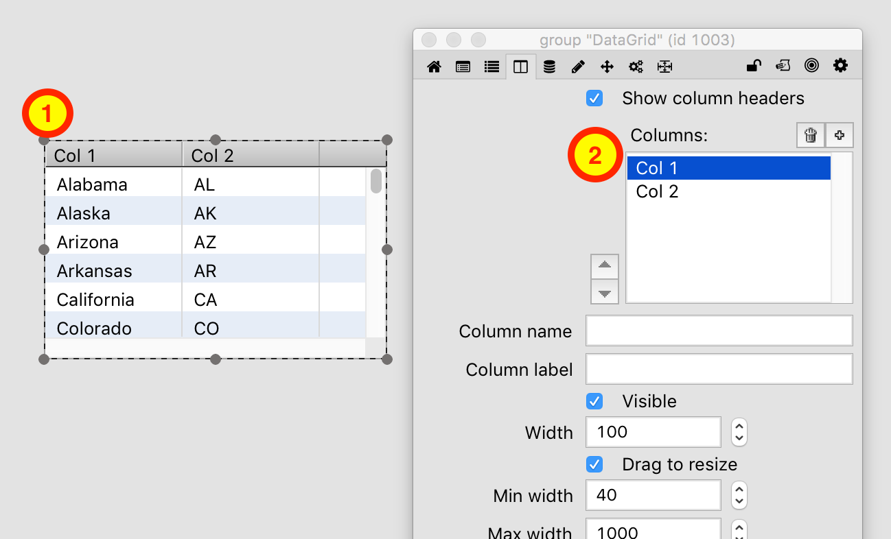
Now that you've populated a Data Grid Table with some data let's look at the columns in the Data Grid.
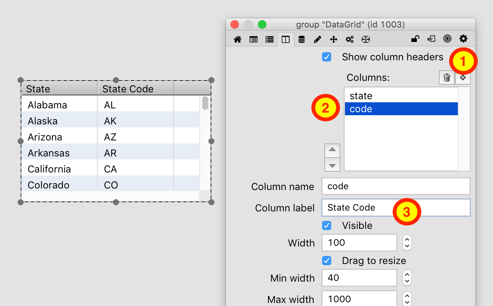
Normally when you work with a Data Grid Table you will create columns in the Property Inspector in advance using the "+" button (1). Seeing as the columns needed already exist you can go through and rename Col 1 to state and Col 2 to code (2).
Note that a label for the columns (3) has also been assigned . Labels are useful for customizing the column labels in the Data Grid Table.
Now that you have defined your columns let's look at how to populate a Data Grid Table by setting the dgText property. Here is an example handler (with comments) that you can place in a button.
Note: Verify that the name of your data grid matches the name used in the code below otherwise an error will occur when you try to run it.
on mouseUp
### Create tab delimited data.
### Note that first line has name of columns.
### Providing names tells Data Grid how to map
### data to appropriate columns.
put "state" & tab & "code" & cr & \
"ALABAMA" & tab & "AL" & cr & \
"ALASKA" & tab & "AK" into theText
### Let Data Grid know that first line has column names
put true into firstLineContainsColumnNames
set the dgText [ firstLineContainsColumnNames ] of group "DataGrid" to theText
end mouseUp
Executing the above code would give you the following result in the Data Grid table.
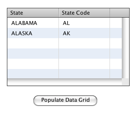
Here is an example of populating the Data Grid Table by setting the dgData property to an array. The end result is the same as the previous step.
Note: Verify that the name of your data grid matches the name used in the code below otherwise an error will occur when you try to run it.
on mouseup
### Create a nested array.
### Array key names in the 2nd dimension
### dictate values for individual columns
put "ALABAMA" into theDataA[1]["state"]
put "AL" into theDataA[1]["code"]
put "ALASKA" into theDataA[2]["state"]
put "AK" into theDataA[2]["code"]
set the dgData of group "DataGrid" to theDataA
end mouseUp
This lesson will show you how to create a bare bones data grid form. Data grid forms are useful when you need a less rigid layout than columns in a table provide. A data grid form gives you complete control over the look and feel of each record you display.
Select the Data Grid and open the LiveCode Property Inspector. Change the style to form.
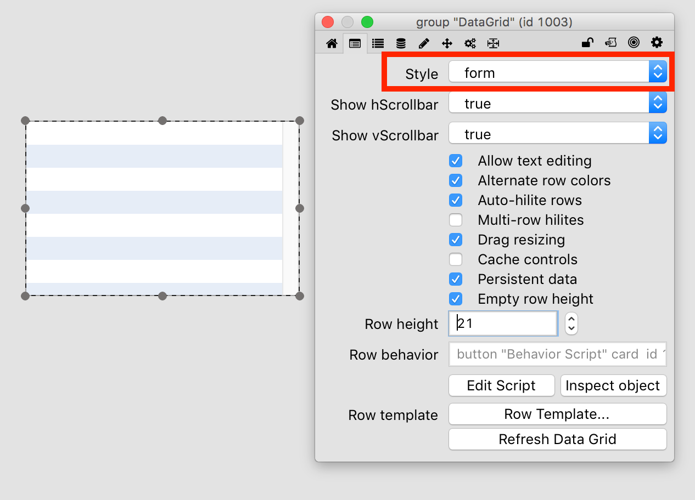
Now you can assign some text to the data grid. By default a data grid will render some basic data without you having to customize the row template. To assign some text:
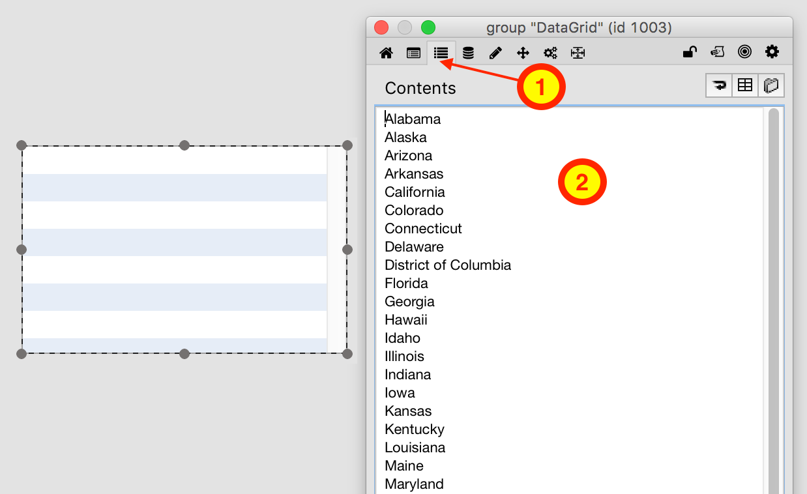
Switch to the Contents pane of the Property Inspector. (1)
Type or paste some line delimited text into the field. (2)
That's it! The data you entered in the field will appear in the data grid. Now you are ready to customize the look and feel of your records by modifying the row template.
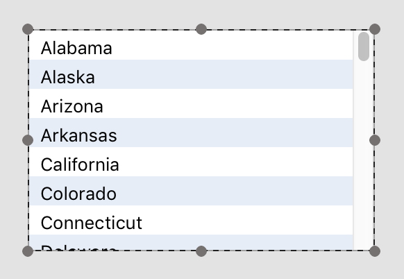
You should note that while you can assign line delimited text to a data grid form, the data grid really works with multi-dimensional arrays under the hood. By using arrays you can store and display all different kinds of data in a data grid. Being able to assign the Contents property is merely a convenience.
This lesson provides a low level detail, step-by-step example of creating a custom data grid form. Download the attached sample stack to see the scripts.

This is the data grid that you will create. Each row displays a name, a title and an image.
To begin, drag a data grid from the Tools palette onto your card.
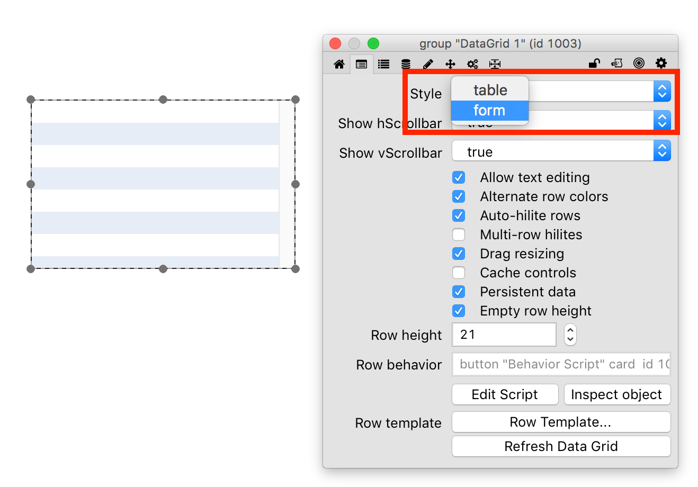
Select the data grid and from the Basic Properties pane of the Property Inspector change the style of the data grid to Form.
Now you are going to design the row template for the data grid form. The row template dictates how each record in the data grid will be displayed.

Before you start editing the row template you need to know about the data that will be displayed each row. This screenshot shows an excerpt from the code that populates the data grid using a multi-dimensional array (look in the card script of the example stack). Each row will have access to the data stored in the FirstName, LastName, Title and ImageURL keys of the array.
You are now going to add UI controls to the row template in order to display the data for each of these keys.
With the data grid selected, click on the Row Template button in the Property Inspector to open the card containing row template controls.
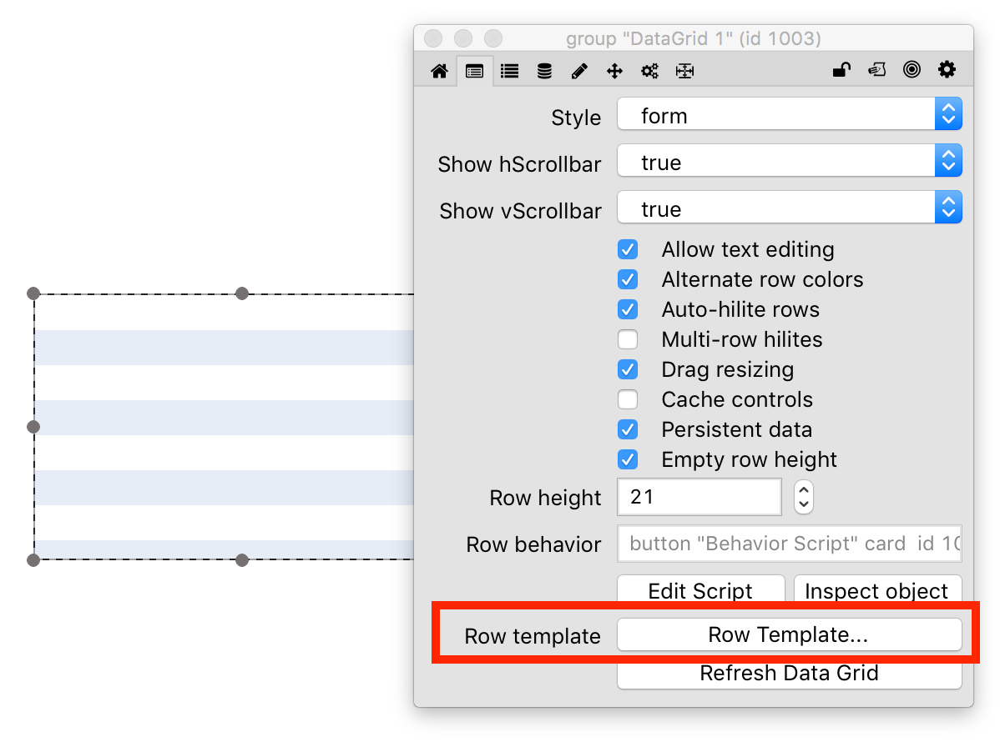
In order to customize the look you need to edit the contents of the template group.
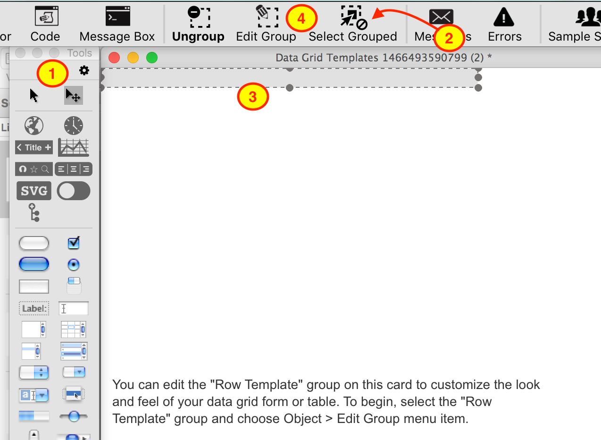
The default template group has a field named Label. Click on the left side of the gray rectangle to select it.(1)
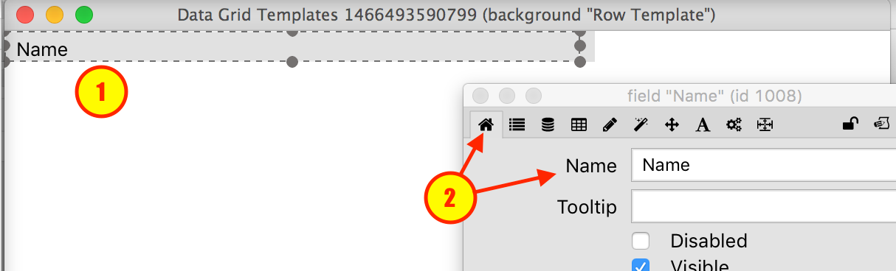
Open the Property Inspector for this field and from the Basic pane (2) change the name of the field to Name (2). Switch to the Contents pane and assign Name as the content (3).
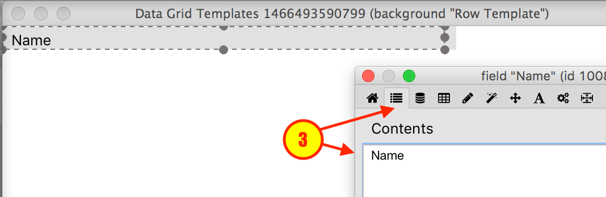
With the Name field still selected go the Text Formatting pane of the Property Inspector (1) and change the Style to Bold(2).
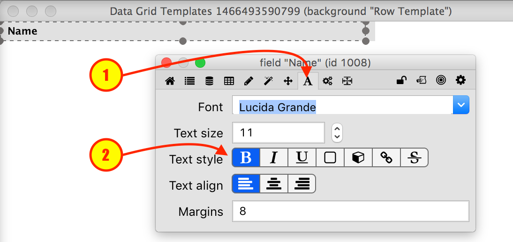
Drag a label field from the Tools palette (1).
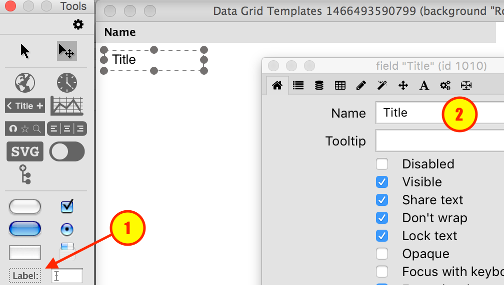
Name it Title (2) and assign Title to the content (3).
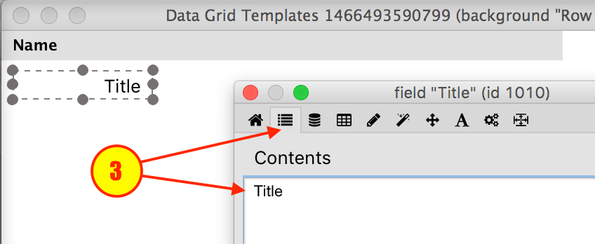
Change the text alignment of the field to the left side using the Text Formatting pane of the Property Inspector.
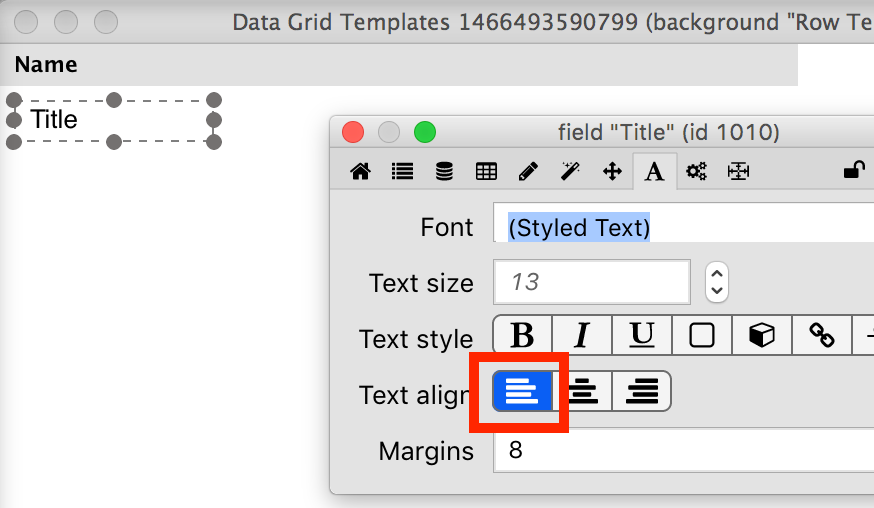
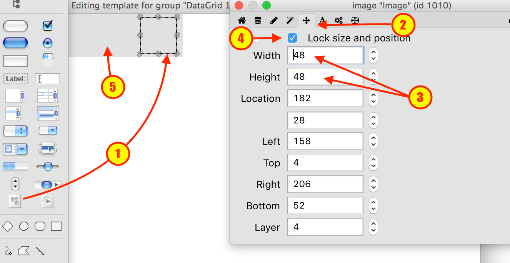
Now drag an image object into the group using the Tools palette (1). With the image selected, select the Position pane on the Property Inspector (2) and set the width and height of the image to 48 pixels (3). Also check the Lock size and position checkbox (4) so that any image is scaled to fit within these bounds.
Finally, select the Background graphic (5) and resize it so that it frames the other controls. In the example stack the width of the graphic is 214 and the height is 56.
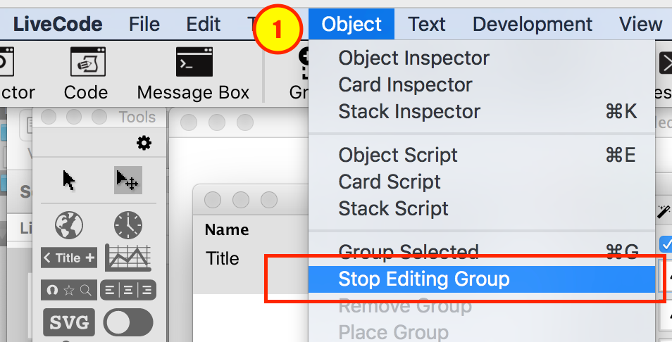
You are now done adding the UI objects to the row template group. From the Object menu (1), select Stop Editing Group. You can then Close and Save the row template
Now that you have designed the controls for each row you need to write the script that will move data into the controls and position them on the screen.
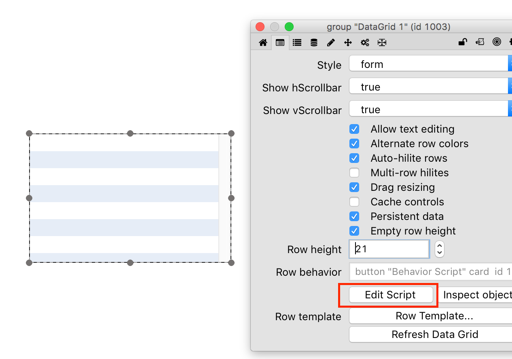
Click on the Edit Script button in the Property Inspector under Row Behavior to begin editing the row behavior script.
In the script that opens when you click the Row Behavior button you will find a command named FillInData. This is where you move data from the pDataArray parameter into the controls you created.
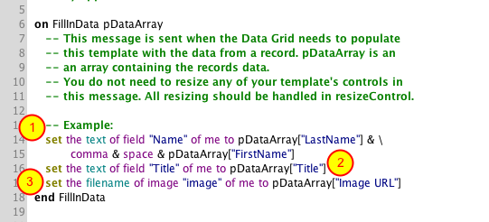
pDataArray is an array with the keys FirstName, LastName, Name and Title. The code that moves the values from the array into the UI controls is pretty straightforward.
You don't need to worry about positioning any of your controls in the FillInData command. You just need to write the code that assigns the data to the UI controls.
Copy & Paste
on FillInData pDataArray
--This message is sent when the Data Grid needs to populate
-- this template with the data from a record. pDataArray is an
-- an array containing the records data.
-- You do not need to resize any of your template's controls in
-- this message. All resizing should be handled in resizeControl.
-- Example:
set the text of field "Name" of me to pDataArray["LastName"] & \
comma & space & pDataArray["FirstName"]
set the text of field "Title" of me to pDataArray["Title"]
set the filename of image "image" of me to pDataArray["Image URL"]
end FillInData
The LayoutControl message is where you position all of your controls. For this template you begin by positioning the image (1). Next you extend the Name and Title fields to the edge of the image (2). Finally you resize the Background graphic to fill the entire row rectangle.

Copy & Paste
on LayoutControl pControlRect
local theFieldRect,theRect
-- This message is sent when you should layout your template's controls.
-- This is where you resize the 'Background' graphic, resize fields and
-- position objects.
-- The first thing you should do is capture 'the rect of me'.
-- For fixed height data grid forms you can use items 1 through 4 of the rect as
-- boundaries for laying out your controls.
-- For variable height data grid forms you can use items 1 through 3 of the rect as
-- boundaries.
-- Example:
set the right of image "image" of me to item 3 of pControlRect - 5
put the left of image "image" of me into theLeft
put the rect of field "name" of me into theRect
put theLeft - 10 into item 3 of theRect
set the rect of field "Name" of me to theRect
put the rect of field "title" of me into theRect
put theLeft - 10 into item 3 of theRect
set the rect of field "Title" of me to theRect
set the rect of graphic "Background" of me to pControlRect
end LayoutControl
This is an example of a handler that populates the data grid with data by setting the dgData property. The dgData property accepts a multi-dimensional array. The first dimensions is an integer representing the row. The second dimension are the key/values you want to pass to each row.
You can find this handler in the card script of the example stack.
Copy & Paste
command uiPopulatePeople
put "images/" into theImageFolder
put "Lucky" into theDataA[1]["FirstName"]
put "Day" into theDataA[1]["LastName"]
put "Three Amigo" into theDataA[1]["Title"]
put theImageFolder & "monkey.jpg" into theDataA[1]["Image URL"]
put "Dusty" into theDataA[2]["FirstName"]
put "Bottoms" into theDataA[2]["LastName"]
put "Three Amigo" into theDataA[2]["Title"]
put theImageFolder & "monkey.jpg" into theDataA[2]["Image URL"]
put "Ned" into theDataA[3]["FirstName"]
put "Nederlander" into theDataA[3]["LastName"]
put "Three Amigo" into theDataA[3]["Title"]
put theImageFolder & "monkey.jpg" into theDataA[3]["Image URL"]
put "Jane" into theDataA[4]["FirstName"]
put "Blue" into theDataA[4]["LastName"]
put "Secret Agent" into theDataA[4]["Title"]
put theImageFolder & "monkey.jpg" into theDataA[4]["Image URL"]
put "Jefferson" into theDataA[5]["FirstName"]
put "Blue" into theDataA[5]["LastName"]
put "Secret Agent" into theDataA[5]["Title"]
put theImageFolder & "monkey.jpg" into theDataA[5]["Image URL"]
lock screen
set the dgData of group "DataGrid 1" to theDataA
### Hilite first row
set the dgHilitedLines of group "DataGrid 1" to 1
unlock screen
end uiPopulatePeople
It is called by a button placed on the card Populate Data Grid with script
on Mouseup
uiPopulatePeople
end Mouseup
After calling the uiPopulatePeople command the Data Grid should look something like this (1).
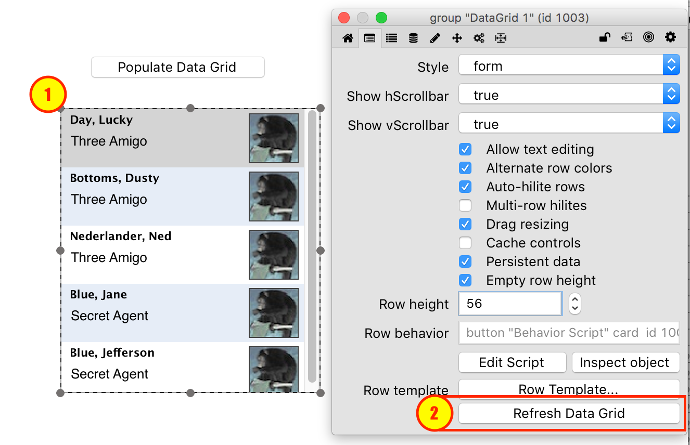
Once you have set the dgData property you can refresh the data grid to see any of the changes made to the row template. You can send the ResetList message to the data grid, or press the Refresh Data Grid button on the Basic Properties pane of the Property Inspector (2) to redraw the data using the updated template.
By default a data grid uses a fixed height for each row. If you have not set the row height the first time you populate the data grid with data then the value that is current for the data grid may not be suitable.
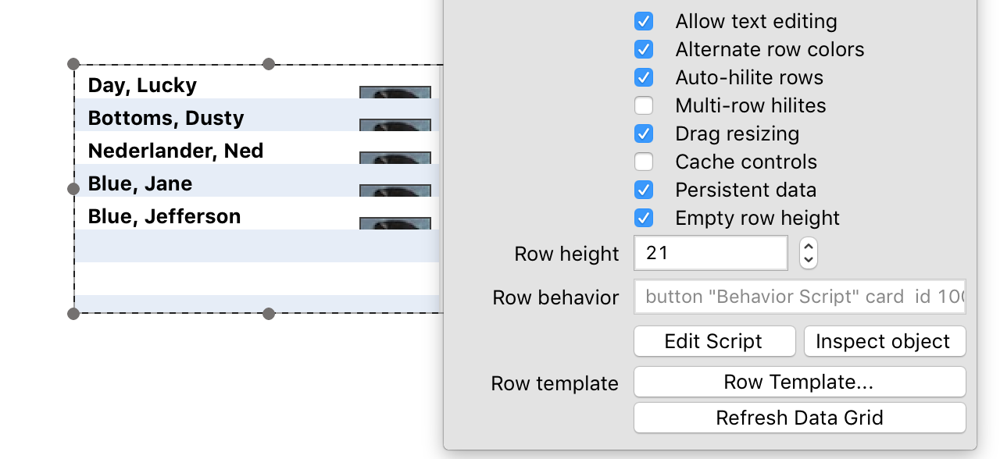
You can change the height of the row template by updating the row height in the Property Inspector.(1)
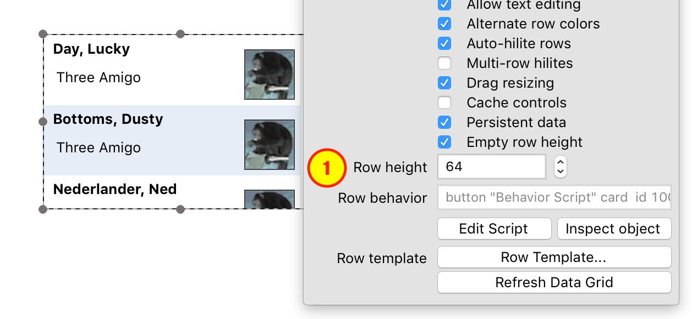
Alternatively you could also simply uncheck the Empty row height property.(2)
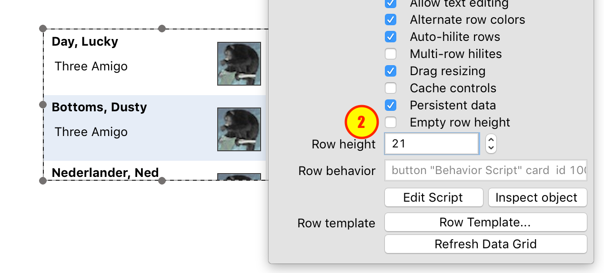
A data grid relies on record templates (forms) and column templates (tables) to display data. These templates are merely LiveCode controls that will be used to visualize your data. In order to manage these controls the LiveCode IDE creates a stack named Data Grid Templates the first time you add a data grid to a card in your stack.
Open the Project Browser (from the Tools menu) and expand your stack by clicking on the "+" sign. Here you will see the newly created Data Grid Templates stack.
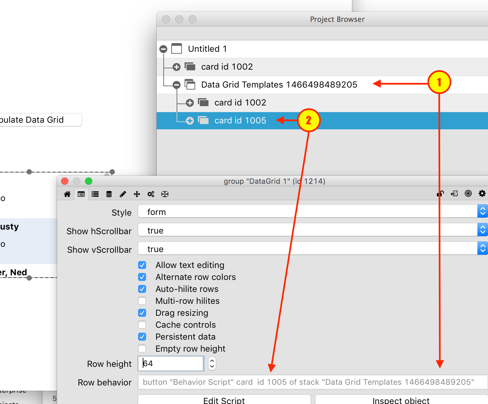
This stack (1) contains a single card (2) for each data grid you add to a stack. Each card contains the template(s) and behaviors that the data grid will use to display the data.
This screenshot shows some controls that might appear on a Data Grid Templates card. The Row Template (1) is the group that contains either all of the controls for a form or the column templates for a table. The IDE assigns the Row Template group to the dgProps ["row template"] property of the data grid.
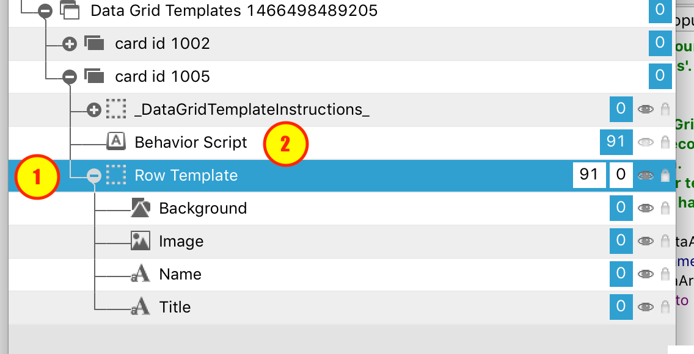
The Behavior Script button is assigned as the behavior to the Row Template group and is used for data grid forms. This script controls how data is inserted into the Row Template controls and how those controls are positioned.
The LiveCode IDE makes it easy to locate your templates in the Data Grid Templates stack. Simply select the data grid control and click the Row Template... button (1) in the Data Grid (2) pane of the inspector. 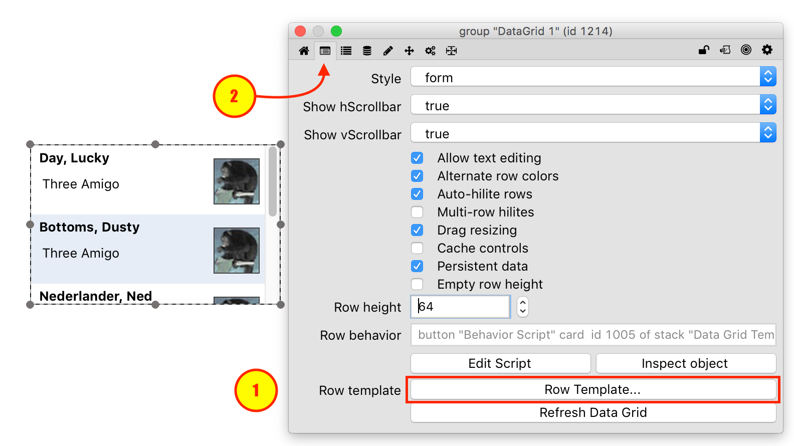
The card containing the template(s) for the selected data grid will open.
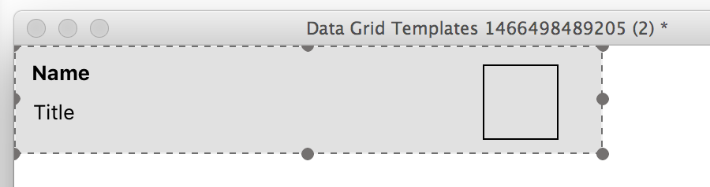
The reason a data grid can be customized is because it uses "templates" to represent data. A template is merely a Livecode group that will be copied and used to draw your data on the screen. When working with data grid forms we refer to this group as a "Row Template".
The Row Template is a Livecode group control. This group represents a single record in the data that you are displaying in a data grid form. This group can contain any Livecode control and the look and layout are entirely controlled by you.
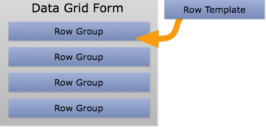
When the data grid form displays your data it copies the Row Template into itself. It makes just enough copies to cover the visible area and then inserts data into these copies of the Row Template. As the user uses the scrollbar to scroll through the data the same copies are used but new data is inserted. This means that the data grid form is never drawing more records than the user can actually see which means the data grid is fast.
Like data grid forms, data grid tables also use templates. The difference is that when working with a table you create a template to represent each column rather than a template to represent each row. We refer to these templates as Column Templates. A column template is similar to a row template. One difference is that a column template is not limited to being a group. You can use a field for a template, a graphic, a button, etc.
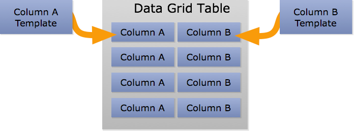
When your data is drawn into a data grid table each column template is copied into the data grid as many times as necessary in order to fill the visible area. Data is then inserted into these templates as the user scrolls.
There are a couple of ways you can assign data to a data grid. This lesson will show you how.
You can use the Contents pane of the Property Inspector to quickly assign data to a data grid. This does not provide as many options as setting the properties mentioned below but it will get you up and running quickly.
When you use the Property Inspector to assign data to the data grid the Property Inspector sets the dgText property of the data grid.
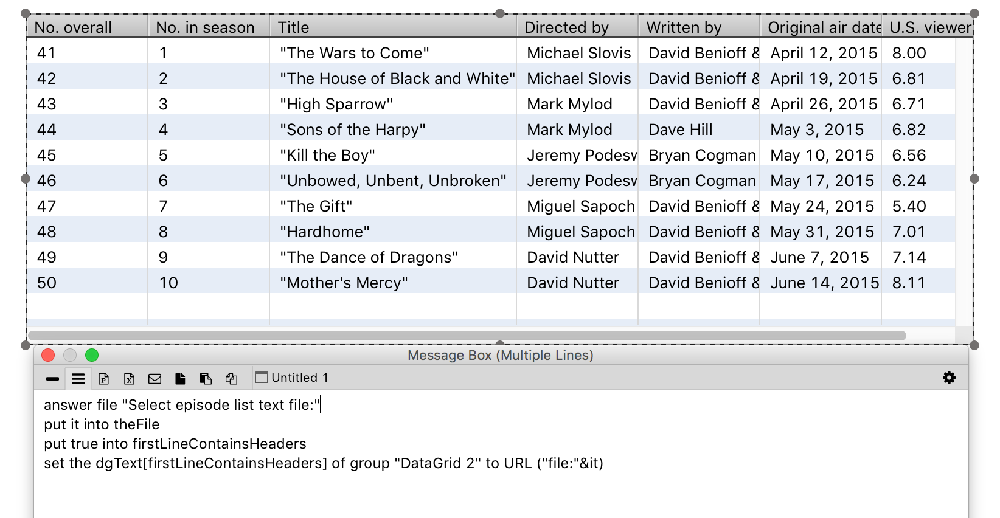
The data grid works with arrays behind the scenes but in the interest of making life easier there is a dgText property. The syntax is as follows:
set the dgText [ pFirstLineContainsHeaders ] of group "Data Grid" to pText
pText is assumed to be a collection of data where each row is delimited by the return character and each item is delimited by a tab. You can map each item of each line in pText to a particular key in an array (and thus a table column) by passing in true for pFirstLineContainsHeaders. If true then the data grid will extract the first line of pText and match the values for existing internal key/column names. The default value for pFirstLineContainsHeaders is false.
If you set the dgText of a data grid table then all data will be imported and assigned to the appropriate column depending on the value of pFirstLineContainsHeaders. Normally you should set this property to true and provide the header that maps each item of each line to a specific column.
Note: that if pFirstLineContainsHeaders is true then the named columns must already exist in your data grid table in order to be displayed. Setting pFirstLineContainsHeaders to true does not create the headers for you.
If pFirstLineContainsHeaders is false then the columns property of the data grid is used for mapping. For example, the first item of a line of pText would be assigned to the column that appears on the first line in the columns property of the data grid. If line 1 of pText contains more items than there are columns in the table then new columns are added. Any new columns are named "Col 1", "Col 2", etc.
If you set the dgText property of a data grid form then the data will be imported but it is up to you to modify your Row Template Behavior to display the imported data correctly. If pFirstLineContainsHeaders is false then each item of each line in pText will be named "Label X" (where X is the item number) in the array that is passed to FillInData.

The dgData property of a data grid is a multi-dimensional array and is the actual format that the data grid works with under the hood. The data grid expects the first dimension of the array to be integers. The number of keys in the first dimension represents the number of records being displayed in the data grid. Here is an example with five records:
theDataA[1]
theDataA[2]
theDataA[3]
theDataA[4]
theDataA[5]
You then store all of your custom data in the second dimension. The following is how you would display five records, each with a Name property:
theDataA[1]["Name"]
theDataA[2]["Name"]
theDataA[3]["Name"]
theDataA[4]["Name"]
theDataA[5]["Name"]
In the example code above there are 5 records, each with a FirstName, LastName and Title property. Your templates will have access to these properties when the time comes to draw the data on the screen.
Important: if you are using a data grid table then a key in the array must match the name of a column in the table in order for that variable (column) to be displayed. So if you have a column named Image URL in your table you must have a corresponding key named Image URL:
theDataA[1]["Image URL"]
When you drop a data grid from the Tools palette onto a card a record template is created for you automatically. This template will display line delimited text but you will most likely want to customize the template. This lesson will show you how to begin customizing the template to meet your needs.
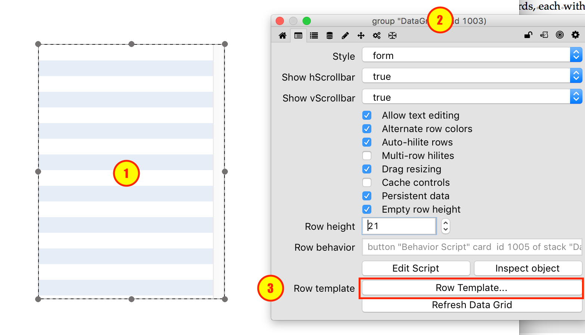
Select the data grid (1) and open the Property Inspector (2). Click on the Row Template... button (3) to open the card that the data grid's template is on.
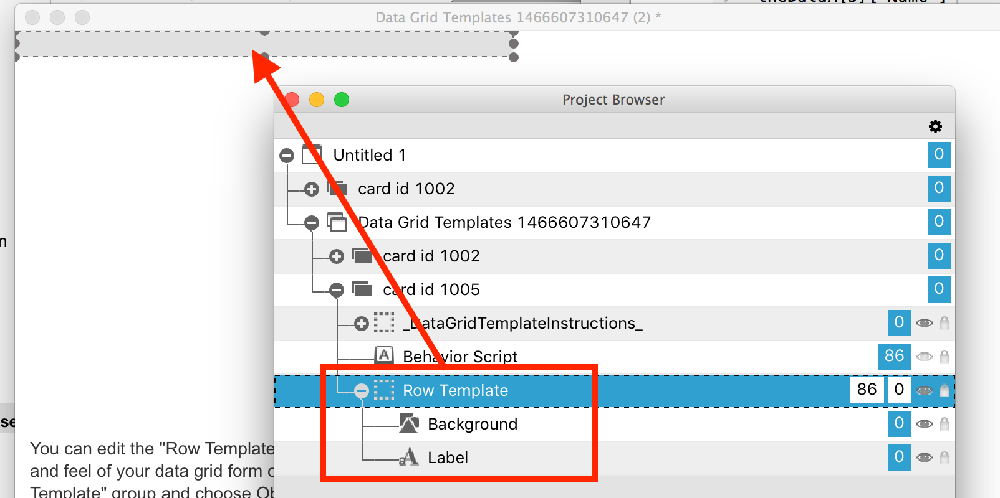
The template for the data grid will open. You can now edit the controls within the Row Template group in order to customize the look and feel according to your needs.
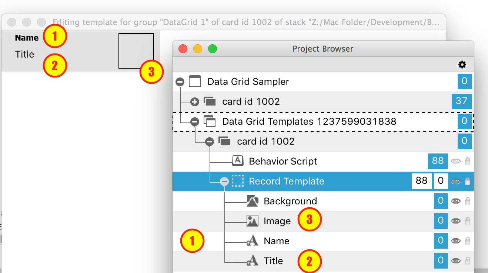
Here is an example of a customized template. A Name (1) and Title field (2) have been added as well as a control for displaying a picture of the person (3).
After customizing the controls in your template you need to update the behavior associated with the template. The behavior script is where you tell the data grid what data goes in which controls as well as how to position the controls.
Click the Edit Script... button to open the behavior script.

The default behavior script contains comments explaining what to do in each handler. The FillInData message is where you will move data from a record into a LiveCode control. To do this you assign keys of pDataArray (1) to a control (2).
Note that the first parameter passed to FillInData is an array representing the current row being displayed. Also note how this is different than the first parameter passed to FillInData for a column template which is the value of the column.
Important: Make sure that you always refer to controls in the template using of me (3). Since multiple copies of the template will be made you will have multiple controls with the same names. Using of me removes any ambiguity and ensures that data is displayed in the correct control.
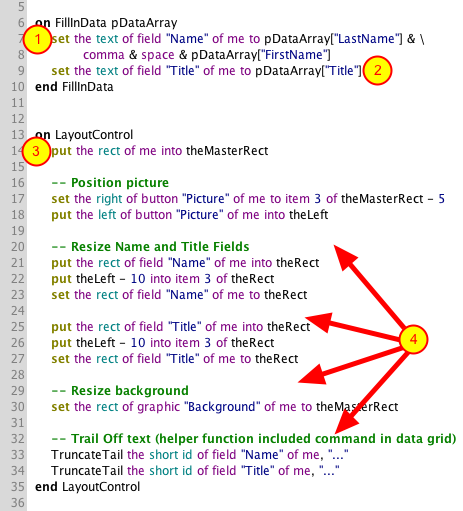
This is an example of a behavior that has been customized. The dgData of the data grid this template is associated with looks like this:
theDataA[1]["FirstName"]
theDataA[1]["LastName"]
theDataA[1]["Title"]
theDataA[2]["FirstName"]
theDataA[2]["LastName"]
theDataA[2]["Title"]
When filling in the data the FirstName and LastName values are placed into a Name field (1) and the Title value into a Title field (2).
This example also shows how to use LayoutControl to layout your row template. Notice how the rectangle of the row template is captured at the beginning (3) and then used to position all of the other elements (4).
A column template is nothing more than a LiveCode control that is named after a column in your table. This control is located in the row template group for your data grid. This lesson will discuss how to create templates for columns in a data grid table.
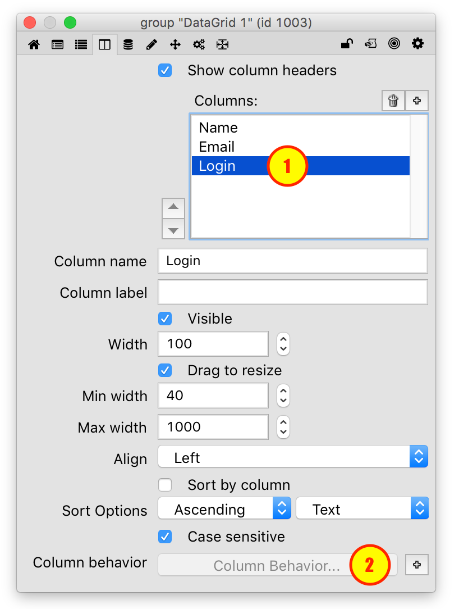
In the Property Inspector, select the column you would like to customize (1). Click the "+" button at the bottom of the pane to create a column template (2).
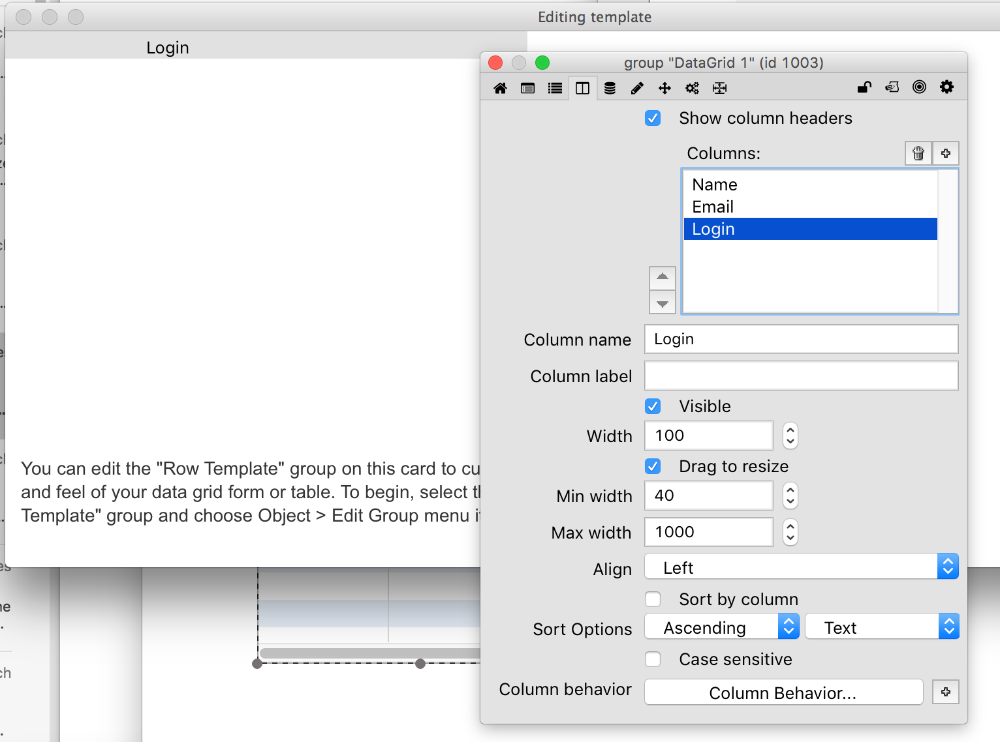
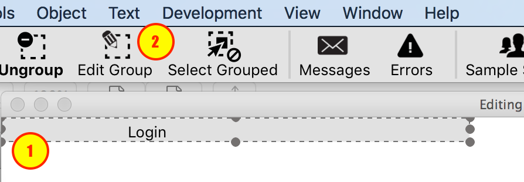
In order to customize the look you need to edit the contents of the template group. Select it (1) and click Edit Group (2) in the LiveCode toolbar.
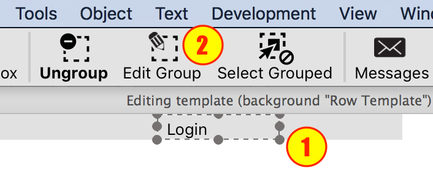
Now select the column group (1) and click Edit Group again (2). At this point you can customize what controls appear in the column template.
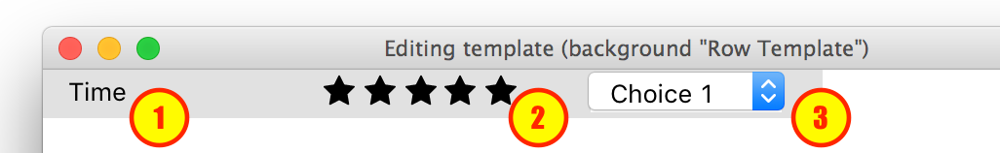
In this example there are three controls for three different columns in the data grid table.
** A field named Time that formats data into a time format (1) (Just rename the field that is included in the row template by default). ** A group named My Rating. This group has some widgets that display images of a star. (2) ** A button named Genre that offers different Genre selections. (3)
Here is what those controls look like in the Project Browser. Notice how all of the controls are located in the Row Template group.
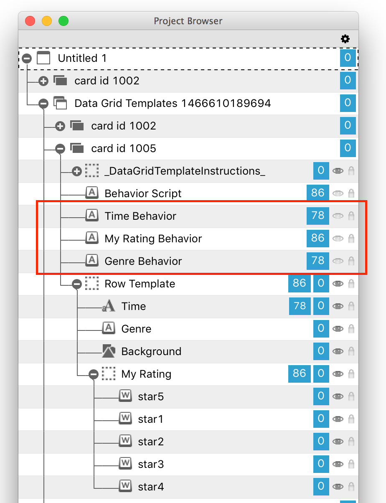
The controls created (*Time* field, Genre button and My Rating group) each have behaviors associated with them. These were created automatically and are stored in appropriately named buttons.

Here is what the FillInData handler looks like for the My Rating column (as stored in the My Rating Behaviour button). pData (1) contains the value of the My Rating column for the row being displayed.
Note how this parameter differs than the parameter sent to FillInData for a row template. For a row template the parameter passed in is an array.
You then use that value to determine how many stars to display (2).
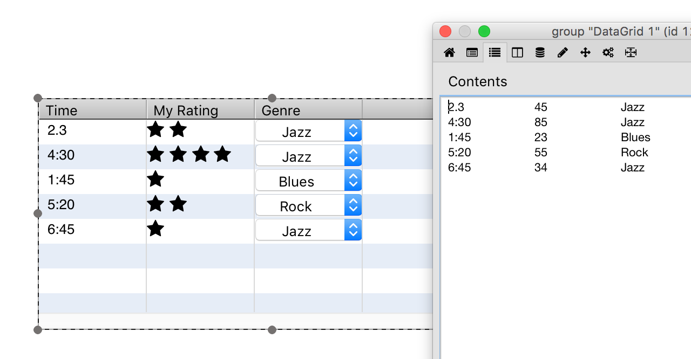
Here is what the table looks like now that the custom column templates have been defined. The table found controls named Genre, Time and My Rating in the record template group so those were used to render the data for those three columns.
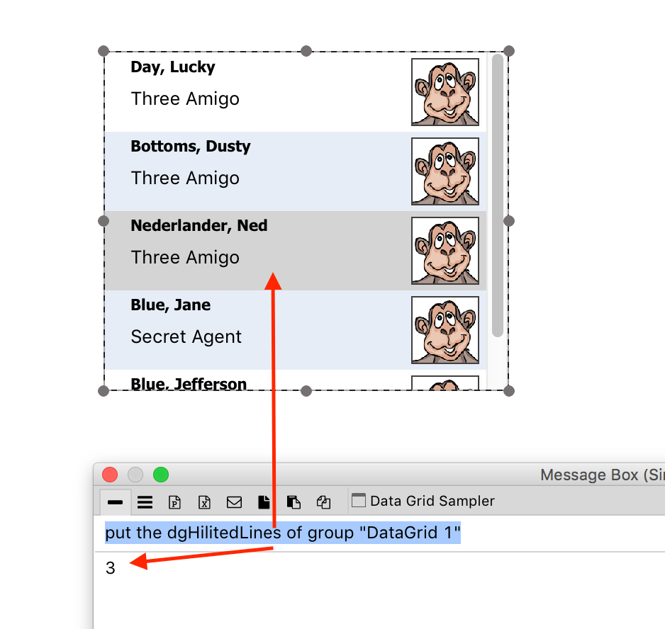
You can get the selected line or lines of a data grid using the dgHilitedLines property.
If we need to determine the line number of a row's behavior script we can access the dgLine property of the row template. The data grid automatically assigns the dgLine and the dgIndex property when displaying the row.
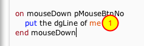
Note: that the use of of me (1) can be used because the mouseDown handler is in the row template group behavior script (which is as if the script were in the row template group itself). If you were to put the mouseDown handler in the script of a button that was located in the row template group then you would have to use of the dgControl of me instead.
This lesson will show you how to get the array of data associated with a row in a Data Grid form as well as how to get the data associated with a row's column in a Data Grid table.
To get the array of data from a Data Grid you can use one of the following properties:
• the dgDataOfIndex
• the dgDataOfLine
Both properties return the array associated with a row in the Data Grid, they just allow you to target the row differently. dgDataOfLine allows you to target the row in the order it appears visually in the Data Grid. dgDataOfIndex allows you to target a row based on the internal index number that the Data Grid uses to identify the row. This value does not change, even if you change the sort order for the Data Grid.
If you just need a particular column from a row then you can use one of the following functions:
• GetDataOfIndex()
• GetDataOfLine()
Both of these functions return the value associated with a particular key, or column, for a row.
Let's look at some examples of how to use these properties and functions.
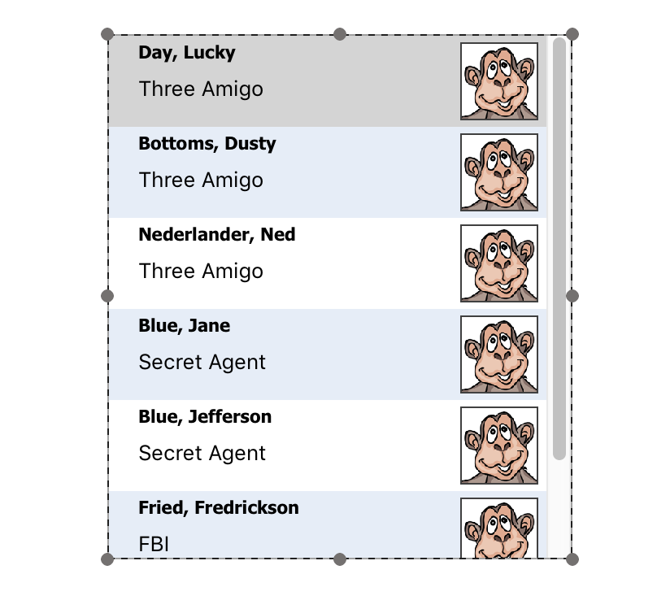
If you want to get the data associated with the selected row use the dgHilitedLines property. The value of that property can be used in conjunction with the dgDataOfLine property. Here is an example of a script that could be placed in a button. The Data Grid group script is NOT in the message path for this example:
on mouseUp pBtnNum
if pBtnNum is 1 then
put the dgHilitedLines of group "DataGrid 1" into theLine
put the dgDataOfLine[theLine] of group "DataGrid 1" into theDataA
## theDataA is now an array variable.
## In the case of the Data Grid pictured above the keys of the
## array are id, FirstName, LastName and Title.
## This answer dialog will display: Dusty Bottoms
answer theDataA["FirstName"] && theDataA["LastName"]
end if
end mouseUp
Now let's assume that you only want to get the id value for the selected row without fetching the entire array. You can use GetDataOfLine to accomplish this. You need to keep in mind that GetDataOfLine (and GetDataOfIndex) is a function defined for a Data Grid. That means that the Data Grid group MUST be in the message path. If the Data Grid group is not in the message path you would need to use the call command.
To illustrate how to use GetDataOfLine let's look at how you could define your own custom property for a Data Grid. The following code defines a uSelectedID custom property that returns the id of the selected row. This code would be placed in the Data Grid group script.
getProp uSelectedID
put the dgHilitedLines of me into theLine
return GetDataOfLine(theLine, "id")
end uSelectedID
You can now access this custom property from any script in your application:
put the uSelectedID of group "DataGrid" into theSelectedID
When the user makes a new selection in a Data Grid the selectionChanged message is sent to the Data Grid. The following selectionChanged message could appear in the script of your Data Grid group:
-- example that would be placed in the data grid script.
on selectionChanged pHilitedIndex, pPrevHilitedIndex
put the dgDataOfIndex [ pHilitedIndex ] of me into theDataA
## Now call handler in card script that loads info for selected person.
uiViewRecordOfID theDataA["id"]
end selectionChanged
If you want to get the data in a row behavior script you can use the dgIndex or dgLine custom properties of the row control. Here is an example that could be used in a Data Grid's form behavior script:
##Data Grid Row behavior script
on mouseUp pMouseBtnNum
if pMouseBtnNum is 1 then
## the dgIndex is a custom property of this row.
## the dgControl is a custom property of the data grid itself.
put the dgDataOfIndex[ the dgIndex of me] of the dgControl of me into theDataA
uiViewRecordOfID theDataA["id"]
end if
end mouseUp
If you wanted to move this same mouseUp code into the Data Grid script itself then you would change the me references to target and add a check to ensure that the user clicked on a row. This example also uses GetDataOfIndex rather than dgDataOfIndex to show an alternative.
##Data Grid Form Example: Data Grid Script
on mouseUp pMouseBtnNum
if pMouseBtnNum is 1 then
## the dgIndex is a custom property of the row.
put the dgIndex of the target into theIndexThatWasClickedOn
if theIndexThatWasClickedOn is not empty then
put GetDataOfIndex(theIndexThatWasClickedOn, "id") into theID
uiViewRecordOfID theID
end if
end if
end mouseUp
If you want to get the data in a column behavior script you can use the dgIndex or dgLine and dgColumn custom properties of the column control. Here is an example that could be used in a Data Grid column behavior script:
Data Grid Table Example: Column Behavior
on mouseUp pMouseBtnNum
if pMouseBtnNum is 1 then
## the dgIndex is a custom property of the row.
## the dgColumn is a custom property of the column.
put GetDataOfIndex(the dgIndex of me, the dgColumn of me) into theColumnValue
## Do something with column value..
end if
end mouseUp
If you wanted to move this same mouseUp code into the Data Grid script itself then you would change the me references to target and add a check to ensure that the user clicked on a column:
Data Grid Table Example: Data Grid Script
on mouseUp pMouseBtnNum
if pMouseBtnNum is 1 then
## the dgIndex is a custom property of the row.
## the dgColumn is a custom property of the column.
put the dgColumn of the target into theColumn
if theColumn is not empty then ## User clicked on a column
put GetDataOfIndex(the dgIndex of the target, theColumn) into theColumnValue
## Do something with column value..
end if
end if
end mouseUp
Sometimes you may want to add a row of data to a Data Grid without having to set the dgData or dgText property. You can add a single row of data by calling the AddData or AddLine commands of a Data Grid.
To use AddData you create an array containing the values for the new row. Here is an example of how to add a new row and have it appear as line 1 in a Data Grid.
Note: This example script resides outside of the Data Grid group script so AddData is not in the message path. This is why the dispatch command is used.
put "First Name" into theDataA["FirstName"]
put "Last Name" into theDataA["LastName"]
put "Title" into theDataA["Title"]
put 1 into theLineNo
dispatch "AddData" to group "DataGrid" with theDataA, theLineNo
put the result into theNewIndex -- integer if successful, error string otherwise
To use AddLine you create a tab delimited string of text containing the values for the new row. You also need to tell the Data Grid the names of the columns that the data should map to. Here is an example of how to add a new row and have it appear as the last line in a Data Grid.
put "First Name" & tab & "Last Name" & tab & "Title" into theRowData
put "FirstName" & cr & "LastName" & cr & "Title" into theDataColumns
put the dgNumberOfLines of me + 1 into theLineNo
AddLine theRowData, theDataColumns, theLineNo
Note: This example script resides inside the Data Grid group script so AddLine is in the message path.
After you add the data to the Data Grid you may want to scroll the new row into view. You can call ScrollIndexIntoView or ScrollLineIntoView to do this.
ScrollIndexIntoView theNewIndex
or
ScrollLineIntoView theLineNo
This lesson will show you how to update data in a row.
You can update data in a row by setting the dgDataOfIndex or dgDataOfLine properties. You can set either property to an array containing the values for the row.
put "New First Name" into theDataA["FirstName"]
put "New Last Name" into theDataA["LastName"]
put "New Title" into theDataA["Title"]
set the dgDataOfIndex[ the dgHilitedIndex of group "DataGrid" ] \
of group "DataGrid" to theDataA
The data grid will now refresh with the new data you assigned to the highlighted index.
If you want to update the data in a row without automatically refreshing the data grid then you can use SetDataOfIndex. You can then use the RefreshList command to redraw the data grid.
Example that sets all values at once:
put "New First Name" into theDataA["FirstName"]
put "New Last Name" into theDataA["LastName"]
put "New Title" into theDataA["Title"]
dispatch "SetDataOfIndex" to group "DataGrid" \
with the dgHilitedIndex of group "DataGrid", empty, theDataA
dispatch "RefreshIndex" to group "DataGrid" with the \
dgHilitedIndex of group "DataGrid"
Example that sets individual keys of the row one at a time:
dispatch "SetDataOfIndex" to group "DataGrid" with the \
dgHilitedIndex of group "DataGrid", "FirstName", "New First Name"
dispatch "SetDataOfIndex" to group "DataGrid" with the \
dgHilitedIndex of group "DataGrid", "LastName", "New Last Name"
dispatch "SetDataOfIndex" to group "DataGrid" with the \
dgHilitedIndex of group "DataGrid", "Title", "New Title"
dispatch "RefreshIndex" to group "DataGrid" with the \
dgHilitedIndex of group "DataGrid"
Clearing the data out of a Data Grid is as easy as setting the dgData (or dgText) of the Data Grid to empty.
set the dgData of group "DataGrid" to empty
This lesson will show you how you to write your own mouseDown event in a Data Grid without breaking the default Data Grid behavior. You need to know how to do this when showing a contextual menu or if during the mouseDown event you want to use the data in the row the user clicked on.
When you add a mouseDown handler to a Data Grid you are intercepting a message that the Data Grid normally handles. Doing so changes the behavior of the Data Grid and you need to take that into account when coding your mouseDown handler.
If you were to place the following code in your Data Grid script you would not get the result you were expecting. The reason is that the line that was clicked on would not be selected until after your popup menu was displayed. Why? Because the Data Grid behavior script processes mouseDown AFTER the mouseDown handler you have defined in the Data Grid script itself.
on mouseDown pMouseBtnNum
if pMouseBtnNum is 3 then
## Oops! Line that user clicked on has not been selected since
## Data Grid has not processed mouseDown yet. Contextual
## menu won't target proper line.
popup button "MyContextualMenu"
end if
pass mouseDown
end mouseDown
In order to work around this the Data Grid wraps all mouseDown functionality in a handler named dgMouseDown. You can call this handler in your code in order to get the expected results.
The following examples show how you can define a mouseDown handler in a Data Grid script. In the examples the line the user clicks on will be selected before the custom mouseDown code executes. Note that the mouseDown message is not passed after calling dgMouseDown. This would only repeat the call to dgMouseDown which is not the desired behavior.
Example: Contextual Menu
on mouseDown pMouseBtnNum
## Let Data Grid process mouseDown and select row that was clicked on
dgMouseDown pMouseBtnNum
## Now contextual menu will act on the proper line.
if pMouseBtnNum is 3 then
popup button "MyContextualMenu"
end if
## Don't pass mouseDown
end mouseDown
Example: Getting Value From Cell Clicked On (Data Grid table)
on mouseDown pMouseBtnNum
## Let Data Grid process mouseDown and select row that was clicked on
dgMouseDown pMouseBtnNum
## Get value of column clicked on. The column name can be accessed in the
## dgColumn custom property of the column control (the target).
put GetDataOfIndex(the dgHilitedIndexes of me, the dgColumn of the target) into \
theColumnValue
## Don't pass mouseDown
end mouseDown
This lesson will demonstrate how to update the data associated with a row in a data grid when the user makes a selection from an option menu.
Here is the data grid we will be working with. Col 2 has been given the name Rating and has been customized with an option menu. What we are going to do is update the data associated with a row to reflect the selection the user makes in the option menu.
We need to customize the column behavior. From the Columns pane (1) in the Property Inspector select the Rating column (2) and then click the Column Behavior button (3).
In the FillInData handler we are setting the menuhistory based on the value of pData that is passed in. As there is only a single button in the Rating column template, it can be referreed to as button 1 of me.

A menuPick handler needs to be added to the column behavior script in order to accomplish the goal. When the user makes a selection from the option menu the menuPick message is sent by the engine. The SetDataOfIndex command to can then update the value for the column. The parameters for SetDataOfIndex are the index, the column name and the new value. Since the above script is in a column behavior we can use the dgIndex of me (1) for the index and the dgColumn of me (2) for the column name.
Here is what the data grid's internal array looks like before making a menu selection.
After making a selection for row 2 (1) the internal value was updated (2).
The command ResetList redraws a data grid after having copied in fresh copies of any templates. Here is an example of how you might use it.
## Get reference to group that serves as row template for data grid
put the dgProps["row template"] of group "DataGrid" into theRowTemplate
## For tables get reference to custom template for column
put the long id of group "My Column" of theRowTemplate into theColTemplate
## Make any updates to template
set the text of button 1 of theColTemplate to "New Option1" & cr & "New Option 2"
## Refresh the data grid
dispatch "ResetList" to group "DataGrid"
Or you can simply issue it from the message box.
If your application needs to use the same style of data grid in multiple places in your project then you can easily share the same row template between multiple data grids. This lesson will show you how.
The first step is to create your first data grid and customize the template (1). The data grid property that determines the Row Template that is used to draw the data grid is dgProps["row template"]. The message box shows a query for this property in order to get a reference to the data grids row template (2).
Now you can add other data grids to your project. Here the second data grid is added to the same stack as the first. After adding the data grid you can set the dgProps["row template"] property to the long id of the first data grid's row template.
You can also see that the Row Behavior for datagrid 2 is listed as coming from the same template card as for the original DataGrid 1 which was obtained in the previous step.
Alternatively you could also do the following: (here we are setting the properties of a data grid in a second stack)
set the dgProps["row template"] of group "DataGrid 1" of stack "Untitled 1"\
to the dgProps["row template"] of group "DataGrid 1" of stack "my program"
Note: The LiveCode IDE creates a card in the Data Grid Template XXX stack with a row template every time you drag a data grid on to a card. You may want to delete this card if you aren't going to be using that template.
See how the Row Behavior script (1) correctly identifies the template from the first stack (**Data Grid Sampler**) and how this indeed does contain the Row Template (2) being used in the second stack.
A data grid has a helper command that will print off the first line of each key in the internal data array. If you need to quickly see what the internal array looks like just send PrintKeys to the data grid. This will print the array in the message box.
Note: You should not rely on PrintKeys for anything other than taking a quick peek at the array. It only prints the first line of each key so it is not a 100% accurate view of the data.
This lesson will show you how to add a custom property to a data grid that returns the aggregate value of a column. Usually this would be used with data grid tables but works equally as well with data grid forms.
The simplest way to calculate aggregate values is to add a getProp handler to your data grid script. In this example a custom property called uSumOfColumn (1) has been defined. Passing it a column name (2) returns the sum of all rows of that column (3).
Here is an example of using the custom property. When clicking on the button (1) the text of another field (in this case "sum") is set to the uSumOfColumn custom property (2).
Here the result has been put into the Sum field.
You can determine if the data grid has focus by performing the following check:
if the long id of group "DataGrid" is in the long id of the focusedobject then
## Data grid has focus
end if
This lesson will show you how to get data out of a data grid.
The data will be exported from a data grid that looks like this.
command uiPopulatePeople
put "images/" into theImageFolder
put "Lucky" into theDataA[1]["FirstName"]
put "Day" into theDataA[1]["LastName"]
put "Three Amigo" into theDataA[1]["Title"]
put theImageFolder & "monkey.jpg" into theDataA[1]["Image URL"]
put "Dusty" into theDataA[2]["FirstName"]
put "Bottoms" into theDataA[2]["LastName"]
put "Three Amigo" into theDataA[2]["Title"]
put theImageFolder & "monkey.jpg" into theDataA[2]["Image URL"]
put "Ned" into theDataA[3]["FirstName"]
put "Nederlander" into theDataA[3]["LastName"]
put "Three Amigo" into theDataA[3]["Title"]
put theImageFolder & "monkey.jpg" into theDataA[3]["Image URL"]
put "Jane" into theDataA[4]["FirstName"]
put "Blue" into theDataA[4]["LastName"]
put "Secret Agent" into theDataA[4]["Title"]
put theImageFolder & "monkey.jpg" into theDataA[4]["Image URL"]
put "Jefferson" into theDataA[5]["FirstName"]
put "Blue" into theDataA[5]["LastName"]
put "Secret Agent" into theDataA[5]["Title"]
put theImageFolder & "monkey.jpg" into theDataA[5]["Image URL"]
lock screen
set the dgData of group "DataGrid 1" to theData
## Hilite first row
set the dgHilitedLines of group "DataGrid 1" to 1
unlock screen
end uiPopulatePeople
This is the code that was used to populate the data grid. This shows you the keys that each record has (*FirstName*, LastName, Title and Image URL).
command uiExportData
## Export data to XML
## Get Data Grid Array
put the dgData of group "DataGrid 1" into theDataA
## Get indexes in proper order
put the dgIndexes of group "DataGrid 1" into theIndexes
## Prefix XML
put "<people>" & cr into theXML
## Loop through data, putting into XML format
repeat for each item theIndex in theIndexes
put "<person>" & cr after theXML
put "<first_name>" & theDataA[theIndex]["FirstName"] & "</first_name>" & cr after theXML
put "<last_name>" & theDataA[theIndex]["LastName"] & "</last_name>" & cr after theXML
put "<title>" & theDataA[theIndex]["Title"] & "</title>" & cr after theXML
put "</person>" & cr after theXML
end repeat
## Close root XML tag
put "</people>" after theXML
put theXML
end uiExportData
This is an example of how to get data out of a data grid. Begin by getting the dgData array and the dgIndexes. The indexes are a comma delimited list of the keys of the dgData in the proper order.
After you have the array and the ordered list of indexes you can loop through each record in the array. In this example the data is just wrapped in XML tags.
This is what the output for this example looks like in the message box.
This lesson will demonstrate how to associate the hilite state of a checkbox in a data grid with a row value in the data grid.
Attached Files
Before you begin, drag a data grid onto a stack and set the style to Form using the Property Inspector.
Click the Row Template button to open the template for the data grid.
Now that the card with the data grid row template is visible, open the Project Browser selecting the Tools > Project Browser menu option.
Select the card with your template (it should be the second card under the Data Grid Templates stack) (1). Next, double-click the Row Template group on the card (2). Doing so will select the group on the card (3).
Now select the Object > Edit Group menu option. This will put the group in edit mode which will allow you to drag controls from the tools palette into the group.
From the tools palette, drag a checkbox onto the card and place it in the upper-left corner. The button will appear in the list of controls in the Project Browser.
Open the button's Property Inspector, select the Position pane and change the height to 21. Set the left and top properties to 0.
Now that you have added the checkbox button you no longer need the Label field in the row template. We will do this using the Project Browser
Note: You need to stop editing the group before returning to the Project Browser in order for it to correctly update. Click on the card area under the checkbox and then click the Stop Editing button on the Toolbar.
You may also need to collapse the card tree in the Project Browser window and reopen it to force the update to the Project Browser display.
In the Project Browser select the Label field and delete it by pressing the delete key on the keyboard.
You will be asked to confirm you wish to delete this object. Check that it is identifying the correct object to delete, and then click OK.
After deleting the field you should have only the Background graphic and the Check checkbox in the Row Template group.
Next you need to edit the Row Behavior in order to take into account the new checkbox control.
Click the Edit Script button.
In the FillInData Handler you need to remove references to the Label field and add code for the Check button. The code will set the label of the checkbox to the label property of the data grid row. It will set the hilited property to the checked property of the row.
Copy & Paste
on FillInData pDataArray
-- This message is sent when the Data Grid needs to populate
-- this template with the data from a record. pDataArray is an
-- an array containing the records data.
-- You do not need to resize any of your template's controls in
-- this message. All resizing should be handled in resizeControl.
set the label of button "Check" of me to pDataArray["label"]
set the hilited of button "Check" of me to pDataArray["checked"]
end FillInData
The LayoutControl and ResetData handlers also have references to the Label field which no longer exists. Update both of those handlers with references to the Check button.
Copy & Paste
on LayoutControl pControlRect
local theFieldRect
-- This message is sent when you should layout your
-- template's controls.
-- This is where you resize the 'Background' graphic,
-- resize fields and position objects.
-- For fixed height data grid forms you can use items 1
-- through 4 of pControlRect as boundaries for laying
-- out your controls.
-- For variable height data grid forms you can use
-- items 1 through 3 of pControlRect as boundaries,
-- expanding the height of your control as needed.
-- Example:
put the rect of button "Check" of me into theFieldRect
put item 3 of pControlRect - 5 into item 3 of theFieldRect
set the rect of button "Check" of me to theFieldRect
set the rect of graphic "Background" of me to pControlRect
end LayoutControl
on ResetData
-- Sent when data is being emptied because the control is
-- no longer being used to display data
set the text of button "Check" of me to empty
set the hilite of button "Check" of me to false
end ResetData
When the user clicks on the checkbox the hilited state will change. You need to update the row data in the data grid when this happens so that the dgData array properly represents what is being seen in the interface. You can do this in the mouseUp handler of the behavior script.
During mouseUp the hilited state of the checkbox has been changed and so it is safe to save the value. You just need to call SetDataOfLine and pass in the hilite of the target (the target being the checkbox button).
Add the following to the behavior script. Make sure and compile the script afterwards.
Copy & Paste
on mouseUp pMouseBtnNum
if pMouseBtnNum is 1 then
## did they click on the checkbox?
if the short name of the target is "Check" then
## Update internal value in data grid
SetDataOfLine the dgLine of me, "checked", the hilite \
of the target
end if
end if
end mouseUp
You have now finished configuring the Data Grid so it is time to test. Add a button to the stack and name it Populate grid.
With the Edit tool active, right-click on the button and select Edit Script.
Add a simple script that will populate the data grid with two rows. Each has the label and checked properties that were referenced in the behavior script earlier.

Paste this script to the button script.
Copy & Paste
on mouseUp
put "Line 1" into theDataA[1]["label"]
put "true" into theDataA[1]["checked"]
put "Line 2" into theDataA[2]["label"]
put "false" into theDataA[2]["checked"]
set the dgData of group "DataGrid 1" to theDataA
end mouseUp
After compiling the script, click on the Populate Grid button. The card should now look similar to this.
Try it out. If you click on a checkbox in line 1 it should uncheck. Click on it again to check it.
When working with lists that have checkboxes it is nice to include the option to check or uncheck all of the items in the list. Let's look at how to do that.
Add a button to the card and name it Check/Uncheck.

Edit the script of the button.
The code for checking/unchecking all items in the list isn't too complicated. Here is how the logic is broken up:
Copy & Paste
on mouseUp
## Get Checked Value for 1st Row ##
dispatch function "GetDataOfLine" to group "DataGrid 1" with \
1,"checked"
put the result into theCheckedValue
## Get inverse value of 1st row
put not theCheckedValue into theCheckedValue
## Update all rows
## SetDataOfLine does not redraw data grid
repeat with theLineNo = 1 to the dgNumberOfLines of \
group "DataGrid 1"
dispatch "SetDataOfLine" to group "DataGrid 1" with \
theLineNo, "checked", theCheckedValue
end repeat
## Update datagrid display
dispatch "RefreshList" to group "DataGrid 1"
end mouseUp
Click the Check/Uncheck button to test. You should see the checkboxes toggle between the checked and unchecked state.
If you get the dgData or dgText property of the data grid then you will see the proper values for the checked state of each row.
Select the data grid and open the Property Inspector. Navigate to the Columns pane (1), select the column you want to modify (2), and change the alignment (3).
You can change the alignment by setting the dgColumnAlignment for a column.
set the dgColumnAlignment["Name"] of group "DataGrid" to "left"
Select the data grid and open the Property Inspector. Navigate to the Columns pane (1), select the column you want to modify (2), and check the Sort by column checkbox (3). You can then adjust the sort options as you see fit.
You can sort by column setting the dgProp["sort by column"] property of the data grid to the name of the column you want to sort by.
set the dgProps["sort by column"] of group "DataGrid" to "Name"
Similarly you can change other properties related to the sort by script too.
Select the data grid and open the Property Inspector. Navigate to the Columns pane (1), select the column you want to modify (2), and set the width of the column using the Width text entry field (3).
You can set the size of a column by setting the dgColumnWidth property for the column to an integer.
set the dgColumnWidth["Name"] of group "DataGrid" to 150
By default, a data grid table uses a single field object for each cell in a table and assigns the text property of that field to the cell's data. This lesson will show you how to quickly create your own script that determines how data is rendered in the default table cell. This can be useful for rendering HTML and unicode text, trailing off text that is too wide for a column or for coloring particular cells.
The default column behavior property can be set to a button. The script of the button will be used to fill in each cell in the table.
Drag a button onto the card and name it My Default Column Behavior.
When creating your own default column behavior it is a good idea to start with the script that the data grid itself uses as the default. You can copy the data grid default script easily enough by selecting the button (1) and executing the following statement in the Message Box (2):
Careful of continuation character " \"
set the script of selobj() to the script of button "Default Column" \
of stack "revDataGridLibrary"
Now this behavior can be customized. Here is what the default behavior looks like.
Important: If you decide to write a default behaviour script from scratch make sure to include the dgDataControl getProp handler. This is required in order for the data grid to work properly.
getprop dgDataControl
-- Required by library so that it can locate the control.
return the long ID of me
end dgDataControl
Now you can set the default column behavior property of the data grid. Select the button (1) and execute the following in the Message Box (2):
Note: Careful of continuation character " \"
set the dgProps["default column behavior"] of group "DataGrid 1" \
to the long id of selobj()
Now it is time to customize your script!
The following example will show you how to truncate the tail end of every cell whose content is too wide to fit. The data grid provides a helper command named TruncateTail that takes the short id of a field and a string that signifies the text is being truncated. A call to TruncateTail has been added to the FillInData and LayoutControl handlers so that cell contents are truncated when drawn or when a column is resized.
Note: TruncateTail works fairly well for most cases but can cause visual lag if there are lots of cells being displayed that use TruncateTail. You should test your data and table to make sure it performs adequately for your needs.
Quick Tip: You can determine the name of the column that is being rendered by checking the dgColumn property. You could use this property if you only wanted to truncate the text in certain columns:
switch the dgColumn of me
case "Col 1"
case "Col 2"
TruncateTail the short id of me, "..."
break
end switch
To see the results, click the Refresh Data Grid button in the Property Inspector (1). Notice how cell contents are no truncated as needed (2).


This example will dim any cell that is empty. Since the default cell consists of a single field object this can be accomplished by setting the field's opaque to true, setting the backgroundcolor and changing the blendlevel.
Deleting some entries in the data and click on the Refresh Data Grid button to see the result
This lesson will show you how to determine if the user clicked in the header of a Data Grid table by showing you how to use the dgHeaderControl and dgHeader properties of the target control that was clicked on.
A Data Grid table has a header where the column names are displayed (1). When a user clicks in the header with the mouse the dgHeader of the target returns the long id of the group control that contains all of the header controls.
When the user clicks on a column header (2) the dgHeaderControl of the target returns the long id of the group control that contains all of the column header controls.
####Example####
Here is some sample code that prints off the dgHeaderControl and dgHeader properties when the user clicks on a Data Grid. Place this script in the Data Grid script.
Copy & Paste
on mouseDown pBtnNum
put "Column header control:" && the dgHeaderControl of the target \
& cr & cr & "Header control:" && the dgHeader of the target
end mouseDown
After adding the script to the Data Grid the value of the dgHeaderControl and dgHeader properties are displayed in the Message box. In this example both properties return the long id of a control (1) because the click was on a column header (2) (*State* in this case.)
In the following example only the dgHeader property returns the long id of a control (1) because even though the click was in the table header it was not on a column header (2).
####Overview####
This lesson will show you how to display a contextual menu (1) when the user clicks on a column header in a Data Grid table (2).
####The Code####
Here is some LiveScript code that will display a contextual menu. The code is located in the Data Grid's script.
A contextual menu is displayed when during the mouseDown message when the user clicks with the right mouse button (1).
To determine if the user clicked on a column header you can check whether or not the dgHeaderControl property of the control that was clicked on (**the target**) is empty (2). If the property is not empty then you know that the user clicked on a column header.
Once you know that the user clicked on a column header you can display the contextual menu. In this example the name of the column that was clicked on (3) is appended to "Popup" in order to get the name (*State Popup*) of the popup button to display (4).
Copy & Paste
on mouseDown pBtnNum
## Let Data Grid process mouseDown
dgMouseDown pBtnNum
if pBtnNum is 3 then
if the dgHeaderControl of the target is not empty then
## the user clicked on a column header
## Get column name
put the dgColumn of the target into theColumn
## Get name of contextual button to use
put theColumn && "Popup" into theContextualButtonName
## Display contextual if exists
if there is a button theContextualButtonName then
popup button theContextualButtonName
end if
end if
end if
end mouseDown
####The Result####
Now when a right-click occurs on the State column the State Popup popup button is displayed as a contextual menu.
By default all table columns will have their text property assigned. If you need to work with htmltext or rtftext then you need to provide your own behavior for the table columns.
The simplest way to change the default behavior of table columns is to set the dgProp["default column behavior"] property of the data grid. You set this property to a button id whose script contains the behavior you would like the columns to have. Doing this overrides the default behavior provided by a button on the revDataGridLibrary stack.
set the dgProp["default column behavior"] of group "DataGrid" to the long id\
of button "My Custom Column Behavior" of stack "MyStack"
Here is an example of a FillInData command that takes a column value encoded as UTF-8 and sets the unicodetext of the column field.

Important: If you decide to write your own default behaviour script make sure to include the dgDataControl getProp handler. This is required in order for the data grid to work properly.
getprop dgDataControl
-- Required by library so that it can locate the control.
return the long ID of me
end dgDataControl
To see the default column script the data grid uses enter the following in the Message box:
edit script of button "Default Column" of stack "revDataGridLibrary"
Alternatively you can create your own custom column template for a particular column. This allows you complete control over the look and feel of the column. See section How Do I Customize A Table's Columns?
This lesson will show you how to dynamically display line numbers in your data grid table.
####The Table####
Here is the table to display line numbers in.
####Add Line Number Column####
Select the data grid and open its Property Inspector. Select the Columns pane (1) and add a column using the "+" button (2). Rename the column Line Number (3).
####Reorder and Create Column Template####
Use the up arrow (1) to move the Line Number column to the top of the list.
Create a template for this column by clicking on the "+" button at the bottom of the Property Inspector (2).
####Edit Line Number Group####
After creating the column template the card with the template group will open. As you can see a group called Line Number, corresponding to the column's name, has been created and within that group is a single field object.
We do not need to actually do anything to the template so simply close and save it when prompted.
####Edit Column Behavior####
Now all that is left is to define the behavior for this column. Go back to the Columns pane of the data grid's Property Inspector and click the Column Behavior... button (1) to open its script editor.
####Edit Behavior Script####
There isn't much to do here. In FillInData you just want to (1):
set the text of field 1 of me to the dgLine of me .
The dgLine is a property of a row template and this will display the line number for the current line. In LayoutControl you just need to ensure the rect of the field fills the entire cell (2).
####Refresh Data Grid####
In the Property Inspector click the Refresh Data Grid button.
####The Result####
Now the line numbers appear in the table.
####But How Do I Set the dgText Then?####
You may be wondering how you would set the dgText property of this data grid since we have added a Line Number column as the first column in the table.
When you set the dgText of a data grid you can pass a parameter specifying whether or not the first line of text contains the names of the columns that the data should map to. Just pass in true and prepend the column names to your data like this:
put "State" & tab & "State Code" into theColNames
set the dgText [true] of group "Data Grid" to theColNames & cr & theData
This lesson will demonstrate how to customize sorting for columns by handling the SortDataGridColumn message that is sent when the user clicks on a column.
####A Data Grid Table####
The goal is to customize when happens when this table is sorted by the Line Number column.
####The Data Grid Group Script####
A Data Grid calls a built in handler SortDataGridColumn whenever the dgProps ["sort by column"] property is set. This includes when the user clicks on a column header to sort that column. By placing a modified version of the SortDataGridColumn in the data grid's script this message can be captured and the behavior modified.
Place the following in the script for the data grid.
Copy & Paste
on SortDataGridColumn pColumn
switch pColumn
case "Line Number"
## ReverseSort is a helper provided by the Data Grid.
## It merely reverses the current sort.
ReverseSort pColumn ## pass in column so header is hilited
break
case "State Code"
## Just provided as an example of how to prevent the user
## sorting on a column. In this case the "State Code" column.
## We accomplish this by NOT passing the message.
break
default
## For all other cases, pass the message so that the data grid
## will be sorted based on column settings.
pass sortDataGridColumn
end switch
end SortDataGridColumn
The way the custom SortDataGridColumn handler works is simple. Passing the message will cause the data grid to use its default column sorting routines. (1) Set this as the Default case.
Not passing the message prevents the data grid from performing it own sorting (2) and (3).
In this example, clicking on the Line Number column will just reverse whatever current sort exists. This is done by calling ReverseSort, a built-in data grid helper that reverses whatever the current sort order is. (2)
####The Result####
Clicking on the Line Number column (1) now reverses the sort.
####Custom Sort Example####
Here is another example of a custom sort. Try it out and see if you can determine what it does.
## Place in Data Grid script.
## This example shows how to perform a custom sort of data. This is similar
## to the internal routine that the data grid uses.
on SortDataGridColumn pColumn
## Begin by building a list of lines with two items (tab delimited)
## The first item is the index of each record stored in the data grid.
## The second item is the key you are going to sort on.
put the dgData of me into theDataA
repeat for each key theIndex in theDataA
put theIndex & tab & theDataA[theIndex][pColumn] & cr after theData
end repeat
delete the last char of theData
set the itemdelimiter to tab
## perform sort. Lookup the current sort direction for this column
## and use that as sort direction
put the dgColumnSortDirection[pColumn] of me into theSortDirection
if theSortDirection is "ascending" then
sort lines of theData ascending by item 2 to -1 of each #
else
sort lines of theData descending by item 2 to -1 of each
end if
## Rebuild the order of indexes in the data grid
put empty into theIndexSequencing
repeat for each line theLine in theData
put item 1 of theLine & comma after theIndexSequencing
end repeat
delete the last char of theIndexSequencing
## Set the dgIndexes property to new order
set the dgIndexes of me to theIndexSequencing
## Tell data grid to hilite column
HiliteAndStoreSortByColumn pColumn
end SortDataGridColumn
This lesson will show you how to disable column sorting in a Data Grid table.
####Sort By No Column####
Notice in our example, the State column header is hilighted and there is a sorting arrow indicating an ascending sort.
To begin, set the sort by column property to empty. This will remove any column sorting that might be active.
set the dgProp["sort by column"] of group "DataGrid 1" to empty
Just copy and paste the above into the Message box to execute it.
Your table headers should now appear the same, with no highlights or sorting arrow.
####Edit Data Grid Script####
Edit the Data Grid group script by right clicking on the Data Grid and selecting Edit Script.
####Add SortDataGridColumn Handler####
When the user clicks on a table column header the SortDataGridColumn message is sent to the Data Grid. Intercepting this message and not passing it effectively disables sorting. For more information about how SortDataGridColumn works see How Do I Customize Column Sorting?.
Add the following code to your Data Grid group script and compile.
Copy & Paste
on SortDataGridColumn pColumn
end SortDataGridColumn
Now when you click on the table header the data will not be sorted.
Note: Once you add the SortDataGridColumn handler to a Data Grid setting the dgProp["sort by column"] property will no longer do anything. If you need to set the sort by column property later on you would need to remove the SortDataGridColumn handler from the script, or at least pass the message.
This lesson will show you how to modify a data grid script so that you can perform an action whenever a data grid is sorted.
####Add SortDataGridColumn To Data Grid Group Script####
You can customize what happens when a data grid is sort by adding a SortDataGridColumn handler to your data grid's script. For more information about howSortDataGridColum works please see the lesson How Do I Customize Column Sorting?.
In order to perform an action AFTER the sort has been applied you simply need to call the handler the Data Grid behavior uses to sort but NOT pass the SortDataGridColumn handler. Doing so sorts the data just like the Data Grid would and then perform any additional actions you would like.
## Place in Data Grid script.
on SortDataGridColumn pColumn
## Call Data Grid sort routine by hand
SortByColumn pColumn
## Now data has been sorted, do whatever you need to do.
-- my code
.....
.....
## DON'T PASS the "SortDataGridColumn" message!
end SortDataGridColumn
This lesson will show you how to create a custom column template that provides decimal alignment. You can download the stack used to create this lesson.
####Create a Data Grid Table####
####Add Some Data####
Here a couple of rows of decimal numbers have been added to experiment with.
####Create Column Template####
Select the Columns pane (1) in the Property Inspector and click the Add custom column behavior button (2). This will create a custom column template and behavior script.
Notice how the Column Behavior... button has become enabled.
####Edit Column Template####
When you create a custom template for a column a new group, named after the column, is added to the data grid's row template.
Here you see the Project Browser with the template for the Data Grid expanded showing the group for this column (*Col 1*) with a field _ColumnData_ to hold the column's data.
####Edit Column Template Group####
Double-click on the column group in the Project Browser (1). This will select it on the template card (2) and then click the Edit Group button (3) to edit the contents of the column group.
Be sure to double-click on the group icon and not the group's name. Double-clicking on the object's name will simply allow you to edit the name, which is not what is wanted.
####Create 3 Fields####
A column that aligns decimals in the center of the column, and is editable if the user double-clicks on the cell, is achieved by creating three fields.
Since the column template group already had a field named _ColumnData_ double-click this name (in the Project Browser) and rename it to Leftvalue (1). Open the Property Inspector for this field and set its textalign to right. Duplicate the Leftvalue field and name it Rightvalue (2). Set the its textalign to right too. Finally Duplicate this field and rename the duplicate to ForEditing (3). The text of this field should be empty. Make sure that the ForEditing field has a higher layer than Leftvalue or Rightvalue.
Don't worry too much about positioning as the fields will be resized and repositioned when drawn in the data grid.
Click on the card background of the editing template and then the Stop Editing button and close and save the window.
####Edit Column Behavior####
Now that the objects we need to display the column data have been created its time to tell the column what to do when it is drawn. Return to the Property Inspector for the data grid and from the Columns pane (1) click the **Column Behavior ** button (2). This will open the behavior script for the column.
####Update FillInData####
The decimal number is going to be displayed by assigning the left side of the decimal to the Leftvalue field and the right side of the decimal to the Rightvalue field.
set the itemdelimiter to "."
set the text of field "Leftvalue" of me to max(0, item 1 of pData)&"."
set the text of field "Rightvalue" of me to max(0, item 2 of pData)
####Update LayoutControl####
The left and right fields are now resized so that each takes up half of the available width to align the decimal in the center of the cell(1). Finally we resize the ForEditing field to take up the entire cell width(2). This is the field that the user can double-click on to edit the cell contents.
put the rect of field "Leftvalue" of me into theRect
put item 1 of pControlRect into item 1 of theRect
put item 1 of pControlRect + \
round((item 3 of pcontrolRect - item 1 of pControlRect) / 2) \
into item 3 of theRect
set the rect of field "Leftvalue" of me to theRect
put the rect of field "Rightvalue" of me into theRect2
put item 3 of theRect into item 1 of theRect2
put item 3 of pControlRect into item 3 of theRect2
set the rect of field "Rightvalue" of me to theRect2
set the rect of field "ForEditing" of me to pControlRect
####Update EditValue####
EditValue is the handler that is called by the data grid to edit a cell value. Usually this is because the user double-clicked on the cell or tabbed into the cell.
EditFieldText displays, by default, the htmltext of the field you are editing. This default can be overriden by setting the dgTemplateFieldEditor[text |htmltext|rtftext|unicodetext|utf8text] of the data grid. Here the dgTemplateFieldEditor["text"] of the data grid is set to text(1). Of course the ForEditing field has no text in it by default and the "left" and "right" field values need to be combined as documented in the handler.
Also, if the user double-clicks on this cell they actually double-click on the ForEditing field (as it has the higher layer) and it is thus the target (2)
command EditValue
## Assign text the the editor will have when it opens
## We combine the left and right field values.
Set the dgTemplateFieldEditor["text"] of the dgControl of me to \
the text of field "Leftvalue" of me & the text of field "Rightvalue" of me
## The "ForEditing" field is what the user actually clicked on.
## This is the "target"
EditFieldText the long ID of field 1 of the target, the \
dgIndex of me, the dgColumn of me
end EditValue
####Refresh Data Grid####
Now that the necessary changes have been made refresh the data grid so that it redraws with the new template controls. From the Basic Properties pane of the inspector palette click the Refresh Data Grid button. Alternatively you can send ResetList to the data grid.
send "resetList" to group "datagrid 1"
####Test####
The decimals all appear in the center of the cell. Double-clicking brings up an editing field as shown here. Finally the decimal remains in the center of the cell if the column is resized.
This lesson will show you how to change the color of individual lines in a Data Grid table. Before you begin this lesson you will need to read the lesson How Do I Override the Default Behavior for Rendering Data to a Cell?
####Attached Files####
Color_Individual_Line_in_Table.rev
In this example we are going to modify the basic example created in the lesson mentioned above so that it colors a row red if the row's line has error property is true.
By clicking on the Toggle Line 3 Color button the color of line 3 turns red. The code in the button extracts the data for line 3 from the data grid, toggles the line has error property and reassigns the new data to line 3.
on mouseUp pMouseBtnNo
put the dgDataOfLine[3] of group "DataGrid 1" into theDataA
put not theDataA["line has error"] into theDataA["line has error"]
set the dgDataOfLine[3] of group "DataGrid 1" to theDataA
end mouseUp
Now let's look at what the default custom column behavior looks like for this data grid.
####The Default Custom Column Behavior####
Here is the relevant code from the default custom column behavior for this data grid. The key addition to the code is the SetForeGroundColor handler. This handler checks the value of the line has error column for this row (using GetDataOfIndex) and if it is true then changes the cell to red. Since each cell in this row has the same value for line has error the entire row appears red.
on FillInData pData
-- This message is sent when the Data Grid needs to populate
-- this template with the column data. pData is the value to be displayed.
set the text of me to pData
SetForeGroundColor
end FillInData
on LayoutControl pControlRect
-- A default column is just a field.
end LayoutControl
setprop dgHilite pBoolean
-- This custom property is set when the highlight of your column template has
-- changed. You only add script here if you want to customize the highlight.
if pBoolean then
set the foregroundcolor of me to the dgProp["hilited text color"] of the dgControl of me
else
SetForeGroundColor
end if
end dgHilite
private command SetForeGroundColor
if GetDataOfIndex(the dgIndex of me, "line has error") then
set the textcolor of me to red
else
set the textcolor of me to black
end if
end SetForeGroundColor
This lesson will show you how to create a data grid form with variable height lines by modifying the default data grid Row Template and Row Behavior.
To begin, turn off Empty row height for your data grid form in the Property Inspector.
####Edit Row Template####
Open the card that has the row template group by clicking the Row Template button.
####Turn Off dontWrap Property####
The default row template for a data grid has a single field that displays data. With Select Grouped turned on (1) select the field (2). Using the Property Inspector turn off dontWrap (3). You can now close the stack.
####Edit Row Behavior####
Return to the Property Inspector for your data grid. Edit the Row Behavior by clicking on Edit Script button.
####Script Field to Resize to Fit Height####
Only a few modifications are needed to make to the default LayoutControl handler resize the field to fit the height.
The default LayoutControl handler resizes the field to fill the available width (1). After that is done you then need to resize the field to fill the formattedHeight (2). Finally, adjust the rect of the Background graphic to take into account the new field height (3).
on LayoutControl pControlRect
local theFieldRect
## Expand the field to fill the available width
put the rect of field "Label" of me into theFieldRect
put item 3 of pControlRect - 5 into item 3 of theFieldRect
set the rect of field "Label" of me to theFieldRect
## Now resize the field to fit its content
put item 2 of theFieldRect \
+ the formattedheight of field "Label" of me - \
the bottommargin of field "Label" of me \
into item 4 of theFieldRect
set the rect of field "Label" of me to theFieldRect
## Now update the bounding rect to match total the height
## you want this row to have (note there is an additional 4
## pixels added to the bottom
put item 4 of theFieldRect + 4 into item 4 of pControlRect
set the rect of graphic "Background" of me to pControlRect
end LayoutControl
####Refresh Data Grid Contents####
You can now refresh the data grid contents to see the new behavior.
Notice how each line is resized to fit all of the text.
You can sort the rows of a data grid form using the SortDataByKey command.
Let's look at an example.
####Example####
This card has a data grid and an option menu. The option menu contains three values that you can sort by: First Name, Last Name and Title.
####Option Menu Code####
The code to perform the sort is pretty straight forward.
Copy & Paste
on menuPick pItemName
switch pItemName
case "First Name"
put "FirstName" into theKey
break
case "Last Name"
put "LastName" into theKey
break
case "Title"
put "Title" into theKey
break
end switch
put "international" into theSortType
put "ascending" into theDirection
put "false" into isCaseSensitive
dispatch "SortDataByKey" to group "Datagrid 1" with \
theKey, theSortType, theDirection, isCaseSensitive
end menuPick
####The Result####
Here is what the sort looks like after selecting First Name and after selecting Last Name.
This lesson will show you how to make a Data Grid form with rows that expand and contract when clicking on an arrow.
####Expanding and Contracting Rows####
This is what the example stack looks like. By default all of the rows are contracted and only show names.
Clicking on the arrow next to a name expands the row to show the description of the person.
####Setting the Data Grid Properties####
To create a Data Grid form with rows that expand/contact you need to turn off fixed control height in the data grid's Property Inspector.
Note: To turn off the property using script you set the dgProp["fixed row height"] property to false.
####Updating the Row Behavior Script####
In order to get expanding rows working a couple of things need to be taken into account in the Row Behavior Script.
The FillInData handler should show or hide controls as necessary. The example stack stores the expanded state of each row in the expanded key.
In the LayoutControl handler the position of the controls and background graphic based on whether or not the row is expanded or contracted are adjusted . Since the fixed row height property is set to false the Data Grid computes the total height of the data based on the height of each row after calling LayoutControl.
When the user clicks on the arrow the example stack updates the expanded key in the row's data and then redraws the row. Using SetDataOfIndex in conjunction with RefreshIndex is the most efficient way to do this.
pDataArray["expanded"] is a boolean which determines the state of the row.
the short name of the target is "ArrowContracted"
is an expression that evaluates to true or false depending on the target. If the ArrowContracted graphic is visible and thus clicked on, the expression evaluates to true which in turn sets the row to be in its expanded state as per the FillnData handler.
Thus this little snippet effectively toggles the state of the row.
When you set the dgProp["fixed row height"] property of a Data Grid to false the Data Grid must draw all records in order to determine the total height. That means that FillInData and LayoutControl are called for every record in the Data Grid. This can be time intensive depending on the amount of data.
This lesson will show you a technique that can speed up the calculation of the total height of the data in situations where the rows can only have heights of known values.
When the Data Grid loops through the data to calculate the height the message CalculateFormattedHeight will be sent to the Row Template. If your Row Behavior handles this message then the Data Grid will use the integer value that you return rather than calling FillInData and LayoutControl.
Here is an example that uses CalculateFormattedHeight to return the height of a row based on whether or not the row is expanded. Just place the CalculateFormattedHeight handler in your Row Behavior script.
on CalculateFormattedHeight pDataArray
if pDataArray["expanded"] then
return 74
else
return 20
end if
end CalculateFormattedHeight
on FillInData pDataArray
...
end FillInData
By default a table cell can be edited if the user double-clicks on the cell. This tutorial explains what goes on in the default column behavior so you can customize behavior if you would like.
Note: The default column behavior is stored in button "Default Column" of stack "**revDataGridLibrary**". See How Do I Override the Default Behavior for Rendering Data to a Cell?
In order to edit the columns of a data grid table you need to know about the following:
Read up on the entries for EditFieldText, EditValue, EditCell/**EditCellOfIndex** in the API section of the Dictionary.
####EditFieldText####
The EditFieldText command will create an editor for a field that you specify. The default column behavior calls this command with three parameters so that data is automatically saved after the user finishes editing.
####EditValue####
EditValue is the message that is sent to a row when a request to edit a field's contents has been made. The default column behavior calls EditFieldText when this message is received.
####EditCell and EditCellOfIndex####
There are two commands that will open a cell for editing. They are EditCell and EditCellOfIndex. Each takes the name of the column you want to edit and the line or index you want to edit. Here are two example scripts showing how you could use these commands in the script of a data grid.
put "FirstName" into theColumn
put the dgHilitedLine of me into theLineNo
EditCell theColumn, theLineNo
put "FirstName" into theColumn
put the dgHilitedIndex of me into theIndex
EditCellOfIndex theColumn, theIndex
Either of the above calls will trigger the EditValue message.
on EditValue
## Example of opening a field editor for the targeted column.
## Since I'm passing in parameters 2 and 3 any changes will
## automatically be saved to the dgData.
EditFieldText the long id of me, the dgIndex of me, the dgColumn of me
end EditValue
If the user changes any content in the field editor this message will be sent to the field targeted in the first parameter sent to EditFieldText. Read the API docs for EditFieldText which discusses this message.
Example of storing value in dgData in CloseFieldEditor. This would be required if you only passed in one parameter to EditFieldText.
on CloseFieldEditor pFieldEditor
put the dgIndex of me into theIndex
put the dgDataOfIndex[theIndex] of the dgControl of me into theDataA
put the text of pFieldEditor into theDataA[the dgColumn of me]
set the dgDataOfIndex[theIndex] of the dgControl of me to theDataA
end CloseFieldEditor
The data grid commands for creating an editor for a particular field in a row template. This lesson will show you how to use them.
####What You Need to Know####
In order to edit field contents in a data grid form you need to know about the following:
Read up on the entries for EditFieldText, EditValue and EditKey/**EditKeyOfIndex** in the API documentation.
####EditFieldText####
The EditFieldText command will create an editor for a field that you specify. You can use this command to create a field editor for a field in your row template.
####EditValue####
EditValue is the message that is sent to a row when a request to edit a fields contents has been made. You can call EditFieldText from within a handler for this message to begin an editing operation.
####EditKey and EditKeyOfIndex####
EditKey and EditKeyOfIndex will trigger the EditValue message in a row. Each takes the name of the key you want to edit and the line or index you want to edit. Here are two example scripts showing how you could use these commands in the script of a data grid.
Placed in script of row template behavior
on mouseDown pBtnNum
if pBtnNum is 1 then
## Did the user click on the FirstName field?
if the short name of the target is "FirstName" then
put "FirstName" into theKey
put the dgHilitedLine of me into theLineNo
EditKey theKey, theLineNo
end if
end if
end mouseDown
on mouseDown pBtnNum
if pBtnNum is 1 then
## Did the user click on the FirstName field?
if the short name of the target is "FirstName" then
put "FirstName" into theKey
put the dgHilitedIndex of me into theIndex
EditKeyOfIndex theKey, theIndex
end if
end if
end mouseDown
Either of the above calls will trigger the EditValue message. The EditValue can be thought of as a central message where you can open a field for editing text. A handler for this message is where you will call EditFieldText.
on EditValue pKey
## Example of opening a field editor for the field displaying
## the value for pKey
## Since we are passing in parameters 2 and 3 any changes
## will automatically be saved to the dgData.
## 'me' is the Data Grid in this case.
EditFieldText the long id of field pKey of me, the \
dgHilitedIndex of me, pKey
end EditValue
If the user changes any content in the field editor this message will be sent to the field targeted in the first parameter sent to EditFieldText. Read the API docs for EditFieldText which discusses this message.
Here is an example of storing the new value in the dgData of the Data Grid in the CloseFieldEditor handler. Manually storing the value would be required if you only passed in one parameter to EditFieldText.
This example script would be in the Row Behavior script as it uses the dgIndex of me property.
on CloseFieldEditor pFieldEditor
## 'me' is the row control
put the dgIndex of me into theIndex
put the dgDataOfIndex[theIndex] of the dgControl of me into theDataA
put the text of pFieldEditor into theDataA[the dgColumn] of me
set the dgDataOfIndex[theIndex] of the dgControl of me to theDataA
end CloseFieldEditor
The default Data Grid behavior when editing cell contents is to use the text property of the cell as the default value to be edited. This lesson will show you how to provide a specific value for the Data Grid to use as the value to edit.
The technique described requires that you create a custom column behavior as outlined in the lesson How Do I Override the Default Behavior For Rendering Data to a Cell .
####The Default Behavior####
Assume you have a column in your table that displays text with some styling. In this example the last name in column 2 for some entries is italic.
We can accomplish this by using the formatting information contained in the data.
However, when you edit the content of the cell the formatting is lost. This is because the Data Grid edits the text property of the field by default.
####Changing the Default Value For the Editor####
You can change the default value of that the field editor uses by setting a value of the dgTemplateFieldEditor property of the Data Grid. You set the property before calling EditFieldText.
For example, if you wanted to display the italic text for editing you could set the dgTemplateFieldEditor["htmltext"] property to the htmltext of the column being edited:
set the dgTemplateFieldEditor["htmltext"] of the dgControl of me to the htmltext of me
Other properties you can set include rtftext, text, unicodetext and utf8text.
Here is the result of using the example code above in the custom column behavior. Notice how the text being edited is bold.
The default Data Grid behavior when editing cell contents is to put the cursor at the end of the field. This lesson will show how to tell the Data Grid that all of the cell text should be selected.
The technique described requires a custom column behavior as outlined in the lesson How Do I Override the Default Behavior For Rendering Data to a Cell .
By default the Data Grid will place the insertion point at the end of the text of a cell when you start editing a value.
You can tell the Data Grid to select all of the text by setting a special custom property called dgTemplateFieldEditor. If you set the dgTemplateFieldEditor["select text"] of the Data Grid to true then the data Grid will select the cell text.
## Select all text before opening
set the dgTemplateFieldEditor["select text"] of the dgControl of me to true
Add this line of text to the EditValue handler in a custom column behavior. Just place the code right before the call to EditFieldText.
When calling EditFieldText with all three parameters (which is what a data grid column does by default) the data grid will automatically save the text that the user enters in the dgData array. That means that all you need to do is save the text of the editor field to your external data source in the CloseFieldEditor handler. Note that if you save anything other than the text of pFieldEditor then your data source will not match the dgData value.
Here is an example script that goes in the Data Grid group script.
## An example that saves
on CloseFieldEditor pFieldEditor
put the dgColumn of the target into theColumnBeingEdited
put the text of pFieldEditor into theNewText
## Save data to database using command I defined
put "Person" into theTable
## Get the unique id of the row in the database we want to edit
put GetDataOfIndex(the dgIndex of the target, "id") into theRowID
SaveDataToDatabase theTable, theRowID, theColumnBeingEdited, theNewText
end CloseFieldEditor
If you are working with data grid forms or decide to override the default behavior for data grid columns then you will make the call to EditFieldText yourself. For complete control over what gets saved you only pass in 1 parameter to EditFieldText. By passing in 1 parameter you are responsible for saving any changes to dgData.
Assume you made the following call in a data grid form:
EditFieldText the long id of field "Name" of me
A CloseFieldEditor message would still be sent when the user changes the contents of the field but would need to contain code for saving the changes to the dgData array.
Here is an example script that goes in the Data Grid group script.
## CloseFieldEditor placed in data grid script
on CloseFieldEditor pFieldEditor
put the dgColumn of the target into theColumnBeingEdited
## Store UTF8 text
put unidecode(the unicodetext of pFieldEditor, "UTF8") into theNewText
## Save data to database using command I defined
put "Person" into theTable
## Get the unique id of the row in the database we want to edit
put GetDataOfIndex(the dgIndex of the target, "id") into theRowID
SaveDataToDatabase theTable, theRowID, theColumnBeingEdited, theNewText
## Update dgData.
## Setting dgDataOfIndex will refresh the data grid display as well as update dgData
put the dgDataOfIndex[ the dgIndex of the target] of me into theDataA
put theNewText into theDataA[theColumnBeingEdited]
set the dgDataOfIndex[the dgIndex of the target] of me to theDataA
end CloseFieldEditor
By default the Data Grid field editor allows users to enter data and save it back to the Data Grid. If you need data entry to behave differently you can assign your own behavior script to the field editor before it opens. This lesson will show you how.
####Create Your Behavior Script####
####Customize Your Script####
Open the button's script...
Make any customizations you need to make.
####Assign Your Custom Behavior to Field Editor####
Whenever the Data Grid displays the field editor (e.g. the user double-clicks on a cell in a table) a preOpenFieldEditor message is sent to the Data Grid. The first parameter is a reference to the field editor control. This is where a behavior script can be assigned to the field.
A data grid relies on the stack revDataGridLibrary in order to function properly. This lesson will describe how to include this stack in your standalone applications.
####How The Standalone Builder Adds The Necessary Files#### When you add a data grid to a stack, a substack is created whose name begins with "Data Grid Templates".
When you build a standalone application LiveCode uses the settings you have set for your application. These are on the General tab of the Standalone Applications Settings. By default LiveCode will look for a substack whose name begins with "Data Grid Templates". If it finds one then the revDataGridLibrary stack is added to your standalone application.
####But What About Launcher Stacks (Splash Stacks)?####
Some developers prefer to use a launcher (or splash) stack technique. This technique builds a standalone using a stack with very little code in it that in turn opens the main stack that would contain the data grid templates. In this case the stack used to build the standalone will not have a substack whose name begins with "Data Grid Templates" as no data grids have been added to it.
In this case you will need to tell LiveCode that you require the inclusion of the Data Grid Library. As of version LC 8, the DataGrid library DataGrid has been added to the list of Script Libraries in the Standalone Settings dialog. You can now force the inclusion of the DataGrid library, to ensure that any stack loaded by the standalone can use Data Grids.
Open the General tab of the Standalone Applications Settings (1) and select Select inclusions for the standalone application (2)
Now open the Inclusions tab (1), locate the DataGrid library, and then click the checkbox (2) to include it.
##Useful Things to Know ##
There are some things that you could do that will cause you to scratch your head when things go wrong. Since knowing is half the battle we will share the issues we are aware of.
This will generate an error since you are deleting a control that is currently executing code. This is a no-no and the LiveCode engine will complain and stop executing. You can avoid calling a handler that refreshes the data grid from within a control by a) using send in time or b) placing the code in the data grid script itself.
Example A
## Script that is in the row behavior for a data grid.
send "DeleteIndex theIndex" to the dgControl of me in 0 seconds
Example B
## Script that deletes hilited index on mouseUp.
## Place in the data grid script.
on mouseUp pMouseBtnNum
if pMouseBtnNum is 1 then
put the dgHilitedIndex of me into theIndex
DeleteIndex theIndex
end if
end mouseUp
####Don't try to draw a Data Grid on a card that Is not open####
When a Data Grid renders, it dynamically creates fields and accesses certain properties. Some of these properties can not be properly reported by the LiveCode engine unless the field is on an open card.
####Do not lock messages when accessing data grid properties.####
If messages are locked when you try to access a data grid property, for example
set the dgProps["alternate row color"]** of group "DataGrid
the correct value will not be returned/set. A Data Grid relies on getProp/setProp handlers to function. When messages are locked these are not triggered.
####Do not password protect the Data Grid Templates Stack####
The data grid copies the templates from the Data Grid Templates xxxx stack. If you password protect this stack then the data grid will be unable to copy the templates.
####Don't Rename the "Data Grid Templates" Stack####
If you rename this stack then all of your data grids with templates stored in the stack will stop working. Since the data grid can no longer locate the custom templates they will fail to draw properly.
####Don't Try to Search When Data is Being Loaded From an External Source####
####Stop Editing the Template Group Before Drawing Your Data Grid####
When you edit a group in LiveCode the engine no longer knows that the group exists. If you try to draw a data grid while editing it's template group then the data grid will fail to draw. Make sure you have selected Stop Editing from the Object menu or clicked on the Stop Editing icon on the Toolbar.
Setting the dgText property or creating an array and setting the dgData property of a data grid is the easiest way to display your data. But what about situations where creating an array is too time intensive and you already have the data in another format? A data grid can handle these situations for you as well using a feature called callbacks.
Download the attached sample stack and database that shows how to use the techniques described in this lesson to display data from a SQLite database.
####Attached Files####
####The dgNumberOfRecords Property####
Normally a data grid reports the number of records based on the number of numeric indexes in the first dimension of the dgData array. If you set the dgNumberOfRecords property, however, the data grid stops using an internal array and issues a callback message whenever it needs to display data in a line.
Important: When using this technique properties like dgData, dgText, dgDataOfIndex, etc. will no longer return values. The data grid is just displaying records from your data source. It does not store any of that data internally.
####GetDataForLine Callback####
This diagram demonstrates how this works. If you were to set the dgNumberOfRecords to 10000 then the data grid would start sending the GetDataForLine message whenever it needed to display a row. Your responsibility is to fill in the data that the data grid needs by handling the GetDataForLine message. To do that you define GetDataForLine as follows:
command GetDataForLine pLine, @pDataA
end GetDataForLine
You can define this handler in the data grid script or anywhere else in the message path. Just fill in pDataA with the appropriate data and the data grid will display it.
This lesson will show you how to create a data grid through script.
####Copy Data Grid From revDataGridLibrary####
The data grid template is stored in the revDataGridLibrary stack and can be copied using some code similar to this:
copy group "DataGrid" of group "Templates" of stack "revDataGridLibrary" \
to card "MyCard" of stack "MyStack"
put it into theDataGridRef
####Set The "style" Property####
set the dgProp["style"] of theDataGridRef to "table" or "form"
####Assign a Row Template####
set the dgProp["row template"] of theDataGridRef \
to the long id of group "MyRowTemplate" of stack "MyStack"
You should probably create this ahead of time using the IDE. For example, you could create a data grid and then delete it while leaving the row template behind (it will exist on a card in "Data Grid Templates xxx" stack).
Most of the lessons show how to use and change previously created data grids, and assume you want to create them in the IDE. This lesson will explain how to create a table data grid by script.
To make sure that the data grid can accept your tabular data, you should prepare it with these points in mind:
This example works with tab delimited data. The first row of the data should include the names of the columns (this makes it easier to create columns later on) each name should be unique, no empty names are allowed. One way to create tab delimited data is to choose "save as..." in Excel, and then select "text file (tab delimited)". It is simple to load data into Livecode from such a file:
answer file ""
put url ("file:" & it) into theData
Each data grid consists of a group with lots of scripts and objects. Luckily, you do not need to recreate all that from scratch. Instead you can simply copy a template data grid from the data grid library. Because this library is neccesary for all data grid functionality, it will be added to standalones by the IDE automatically. Please also see What Do I Need to Do To Deploy a Standalone With A Data Grid? for an explanation when and how you need to add the library to standalones yourself.
The code to copy a datagrid:
--copy the template group
copy group "DataGrid" of group "Templates" of stack "revDataGridLibrary" to this card
set the name of it to "my Datagrid"
set the dgProp["style"] of group "my Datagrid" to "table"
In theory, your data grid is already ready for use. But for the IDE to interact correctly with the new data grid, you also need to add a substack with the row template, just as the IDE would. On the second card of that stack, you will need to add a group called Row Template, and you need to point your data grid to that group.
Here is how you could do that:
--create row template
put the name of this stack into theMainstack
put "Data Grid Templates" && the seconds into theName
create invisible stack theName
set the mainStack of stack theName to theMainstack
go stack theName
create card
create field "label"
create graphic "Background"
group field 1 and graphic 1
set the name of last group to "Row Template"
go stack theMainstack
--point datagrid to template
set the dgProp["Row Template"] of group "my Datagrid" to the \
long id of group "Row Template" of stack theName
As a last step, you will want to insert the prepared data into the data grid. Again, this assumes that the first row of your data contains an unique description for each column:
--add data
put true into firstLineIsNames
set the dgText[firstLineIsNames] of group "my DataGrid" to theData
Because you are creating the datagrid from arbitrary data, you will also need to dynamically create all necessary columns. To do that you need to set the dgProp["columns"]. Note that it accepts the names only as a return delimited list.
If your data includes the column names in it's first row, you can simply take this and replace tab with return:
--create columns
put line 1 of theData into theColumns
replace tab with return in theColumns
set the dgProp["columns"] of group "my DataGrid" to theColumns
To test out the example scripts, simply copy the following mouseUp handler into a button of an empty stack, and click on it with the browse tool.
on mouseUp
answer file "tab delimited" with type "any file" or \
type "tab file|tab|TEXT" or type "txt file|txt|TEXT"
--in case the user cancels the file dialogue, the script does not proceed
if it = "" then
exit mouseUp
end if
put url ("file:" & it) into theData
lock screen --when doing visual stuff, this helps to speed things up
--make sure the group does not exist already
if there is a group "my Datagrid" then
delete group "my Datagrid"
end if
--copy the template group
copy group "DataGrid" of group "Templates" of stack "revDataGridLibrary" \
to this card
set the name of it to "my Datagrid"
set the dgProp["style"] of group "my Datagrid" to "table"
--position it nicely
set the rectangle of group "my Datagrid" to 0,the bottom \
of me + 16,the width of this card, the height of this card
--create row template
put the name of this stack into theMainstack
put "Data Grid Templates" && the seconds into theName
create invisible stack theName
set the mainStack of stack theName to theMainstack
go stack theName
create card
create field "label"
create graphic "Background"
group field 1 and graphic 1
set the name of last group to "Row Template"
go stack theMainstack
--point datagrid to template
set the dgProp["Row Template"] of group "my Datagrid" to the \
long id of group "Row Template" of stack theName
--create columns
put line 1 of theData into theColumns
--no empty column names are allowed, so insert a space when \
that happens
replace tab & tab with tab & " " & tab in theColumns
replace tab with return in theColumns
set the dgProp["columns"] of group "my DataGrid" to theColumns
--add data
put true into firstLineAreNames
set the dgText[firstLineAreNames] of group "my DataGrid" to theData
end mouseUp
This lesson will show you how to scroll a particular row to the top of the Data Grid form using the dgRectOfIndex (or dgRectOfLine) property. This technique is useful when your rows are not a fixed height.
Here is selected row in a data grid (1). The goal is to scroll that row to the top of the data grid (2).
####How To Do It####
Here is the code that will scroll the selected line to the top of the data grid.
Copy & Paste
put the dgHilitedIndex of group "DataGrid" into theIndex
put the dgRectOfIndex [theIndex] of group "DataGrid" into theControlRect
put the rect of group "DataGrid" into theGridRect
put item 2 of theGridRect - item 2 of theControlRect into theOffset
set the dgVScroll of group "DataGrid" to the dgVScroll of group "DataGrid" - theOffset
After executing the code the row will have been moved to the top of the data grid.
Each data grid row has a dgDataControl property that returns the long id of the control. Each control also has a dgLine and dgIndex property. You can combine the two in order to identify the control the mouse is over.
put the dgDataControl of the mousecontrol into theControl
if theControl is not empty then
put the dgLine of theControl into theLineNo
end if
This lesson demonstrates a handler that will convert a database cursor into an array that you can use to set the dgData property of a data grid.
####The Handler####
command ConvertSQLCursorToArray pCursor, @pOutArrayA
local i,j
local theFields
local theError
put revDatabaseColumnNames(pCursor) into theFields
if theFields begins with "revdberr," then
put item 2 to -1 of theFields into theError
end if
if theError is empty then
put 0 into i
repeat until revQueryIsAtEnd(pCursor)
add 1 to i
repeat for each item theField in theFields
put revDatabaseColumnNamed(pCursor, theField) into \
pOutArrayA[i][theField]
end repeat
revMoveToNextRecord pCursor
end repeat
end if
return theError
end ConvertSQLCursorToArray
The Handler first checks that no errors have been returned. If there are any, the error data is returned.
The handler then steps through the database cursor restructuring the data into an indexed multidimensional array that can be used by the data grid.
####How to use####
You can call this command as follows.
In this example theCursor is a database cursor that you have opened using revQueryDatabase.
local theDataA
ConvertSQLCursorToArray theCursor, theDataA
put the result into theError
If theError is empty then dimension 1 of theDataA will contain integers from 1 to the number of records in the cursor (**revNumberOfRecords**). Each 1st dimension, in turn, has a key for each column in the cursor (**revDatabaseColumnNames**).
####Example####
Here is what the array might look like if your cursor had 2 columns (id and name) and 3 rows.
theDataA [1] ["id"]
theDataA [1] ["name"]
theDataA [2] ["id"]
theDataA [2] ["name"]
theDataA [3]["id"]
theDataA [3] ["name"]
You can use this array to set the dgData property of a data grid.
set the dgData of group "DataGrid 1" to theDataA